I recently went through Open Athena's Marin stack end to end—pulling together the Mochi 535B architecture write-up, the Datakit 25T data pipeline, the Delphi and Scaling Ladder notes, the GB200 EP systems post, Snowball's post-training reports and model cards, and the open training code[1][4][38]. Compared to ordinary open-weight releases, what makes Marin unusually useful to study is the full paper trail behind the weights: how a 25T corpus was deduplicated and mixed, how hyperparameters were extrapolated before launch, which numerical failures surfaced mid-run, and which post-training ideas actually held up under evaluation.
These notes walk through the stack chronologically around Marin's two sparse Mixture-of-Experts (MoE) models:
- Marin “Mochi” 535B-A23B: a 535.3B total / 22.8B active (non-embedding) Normalized LatentMoE trained on 18 trillion tokens across 704 NVIDIA GB200 GPUs (11 healthy NVL72 racks), finishing main pre-training on November 5, 2026[1][2] and releasing 57 intermediate and 262K long-context checkpoints[5].
- Marin “Snowball” 67B-A2B: a 10T-token (~100× overtrained) TPU MoE that beat the dense Marin 32B model at $10\times$ fewer FLOPs and $16\times$ fewer active parameters[8], serving as Open Athena's open post-training testbed across General SFT, Math and Broad-Domain RLVR, FTPO, Model Merging, and Coding-Agent RL[11][12][49].
Reading guide: Section 1 aligns the shared math vocabulary (parameter/FLOP accounting, GQA vs. MLA, Hyperball, Quantile Balancing, and 5D parallelism). Sections 2–6 follow Mochi's open-source implementation[17][20] through block design, Datakit 25T curation, Scaling Laws and the 5-rung Scaling Ladder (Section 4), GB200 systems, and 262K mid-training. Sections 7–9 cover Snowball post-training (09-21 General SFT, Datakit Harmony, Relay SFT, Plateau Dropping, Math/Broad RLVR, FTPO, Campaign2 merge, Smartie RL, Coding GRPO, and Mochi RL readiness) along with Marin's 26-benchmark Eval Policy[16].
Why Marin Matters
Academic ML relies on a clear experimental loop: spot a failure mode, form a mechanistic hypothesis, test a fix, and measure again[4]. As frontier labs stopped publishing data mixes and training logs, even open-weight drops kept the messy middle behind closed doors. Marin and Open Athena set out to restore that transparent loop by publishing code, recipes, preregistered scaling forecasts, negative results, and intermediate checkpoints in real time.
Starting from a single full-time researcher in 2024, Marin progressed across four milestones before taking on a 535B run[4][37][38]:
- From “Tootsie” dense runs to Open Athena: with 1 FTE on free TPU Research Cloud slices, Marin 8B matched Llama 3.1 8B on 16 of 19 evals, and Marin 32B pushed through frequent preemptions after adopting Qwen3-style QK-Norm and removing GSM8K contamination in Dolmino[10]. Expanding into Open Athena grew the group to 10 FTEs and added Russell Power's Iris scheduler, cutting fault recovery from roughly an hour to a few minutes.
- Delphi & MoE V1 (6.7× theoretical / 3.6× realized speedup): after verifying with Delphi that dense scaling laws extrapolated $300\times$ within 0.2%, Marin trained MoE V1 (129B-A16B, 1T tokens, $10^{23}$ FLOPs on TPU v4) with Quantile Balancing, AdamH, GatedNorm, and XSA—hitting 2.234 Paloma loss, 0.8% below its 2.252 preregistered forecast.
- Four stacked upgrades before Hero (+2.1× theoretical speedup): four-scale IsoFLOP ablations (derived in Section 4)[37] combined finer experts (64 to 256, 1.4× theoretical / 1.3× realized), MuonH (1.3× / 1.25×), Partial Key Offset with 50% Partial RoPE (1.2× / 1.2×), and Elie Bakouch's 2.5 Sigmoid rescaling (1.04×), shifting IsoFLOP optima toward fewer active parameters and more tokens.
- July GB200 constraints & Marin Belay: backed by 768 GPUs from the Jen-Hsun and Lori Huang Foundation under a December deadline, Mochi prioritized realized MFU first, preregistered predictions live on W&B[1], and post-training readiness (conservative inductive biases and a 5% terminal LR)[2]—paired with Marin Belay, an automated agent loop that tests community GitHub ideas up the scaling ladder.

Foundations & Primitives
Before jumping into Mochi's JAX implementation or Snowball's RL traces, we align the four analytical tools used throughout Marin: tensor and FLOP accounting, attention/norm stabilization, MoE routing geometry, and 5D sharding[27][28][33][34].
Parameter & FLOP Accounting
Marin packs token activations as row vectors $X \in \mathbb{R}^{B \times S \times D}$, where $B$ is global sequences per step, $S$ is sequence length (4,096 at launch), and $D$ is hidden width (for example, d6144 means $D = 6144$). Attention pairs $H_q$ query heads and $H_{kv}$ key/value heads of width $d_h = 128$, keeping $D = H_q d_h$ across every scaling-ladder rung.
For a sparse MoE block with $N_{\text{fix}}$ non-routed parameters (attention, router, shared experts, norms), $E$ routed experts of $P_e$ parameters each, and top-$K$ routing[18]:
$$N_{\text{total}} = N_{\text{fix}} + E P_e, \qquad N_{\text{active}} \approx N_{\text{fix}} + K P_e$$Avoid estimating active parameters as $N_{\text{total}} \times K/E$: if $N_{\text{fix}} = 200\text{M}$, $E=8$, $K=2$, and $P_e = 100\text{M}$, then $N_{\text{total}} = 1\text{B}$ and $N_{\text{active}} = 400\text{M}$, not $250\text{M}$. Summing Mochi's 48 layers (with untied embedding and lm_head over $V = 128{,}256$) gives 533.8B non-embedding parameters (535.3B total) and 22.8B active non-embedding parameters (24.4B including head and embeddings).
For a dense Transformer, training FLOPs per step (counting backward as $\approx 2\times$ forward, or $3\times$ forward overall at 2 FLOPs per multiply-add) expand as[34]:
$$F_{\text{iter}}^{\text{dense}} = 72 B L S D^2 \left(1 + \frac{S}{6D} + \frac{V}{12 D L}\right) = \underbrace{72 B L S D^2}_{\text{linear + MLP}} + \underbrace{12 B L S^2 D}_{\text{attention}} + \underbrace{6 B S D V}_{\text{lm\_head}}$$With LatentMoE, Levanter's default FLOP counter still prices each SwiGLU routed expert at $3 D d_{\text{ff}}$ instead of the compressed latent width $d_l$. In reality, each latent expert uses $6 d_l d_{\text{ff}}$ forward FLOPs, plus $4 D d_l$ for the down/up projections (each token passes through $W_{\text{up}}$ once after combining). In Marin's implementation, the team applies that per-layer correction before computing $F_{\text{example}} = 3 S \cdot F_{\text{fwd/tok}}$ and MFU so halved expert widths do not artificially double reported utilization[25][27]:
$$\Delta F_{\text{layer}}^{\text{latent}} = 2 \cdot 3 \, d_{\text{ff}} \, K (d_l - D) + 4 D d_l, \qquad \text{MFU} = \frac{F_{\text{train/token}} \times \text{tokens/sec}}{N_{\text{GPU}} \times P_{\text{peak/GPU}}}$$Attention, RoPE & Norms
During autoregressive decoding in element byte width $b_{\text{elem}}$, KV-cache memory scales directly with stored KV heads $H_{kv}$. Grouped Query Attention (GQA) groups $H_q$ query heads so $H_q / H_{kv}$ queries share each KV pair via index map $g(h)$:
$$\begin{aligned} \mathrm{KV}_{\text{bytes}}^{\text{GQA}} &= 2 S H_{kv} d_h b_{\text{elem}}, \qquad g(h) = \left\lfloor \frac{h}{H_q / H_{kv}} \right\rfloor \\ o_t^{(h)} &= \sum_{j \le t} \operatorname{softmax}_j\!\left(\frac{q_t^{(h)} \bigl(k_j^{(g(h))}\bigr)^\top}{\sqrt{d_h}}\right) v_j^{(g(h))} \end{aligned}$$On Mochi ($H_q = 48$, $d_h = 128$, $b_{\text{elem}} = 2\text{ B}$ in BF16), full MHA ($H_{kv}=48$) would cost $24\text{ KiB/tok/layer}$; 4:1 local GQA ($H_{kv}=12$) drops this to $6\text{ KiB/tok/layer}$, and 8:1 global GQA ($H_{kv}=6$) brings it down to $3\text{ KiB/tok/layer}$.
DeepSeek's Multi-head Latent Attention (MLA) takes another path: it projects activations into a shared low-rank latent $c_t^{KV} \in \mathbb{R}^{d_c}$ plus decoupled rotary keys $k_t^R = \operatorname{RoPE}(x_t W_{KR}) \in \mathbb{R}^{d_h^R}$, reconstructs per-head keys/values via $W_{UK}, W_{UV}$, and absorbs $W_{UK}^\top$ into $q_t^C$ at decode time so only $(c_t^{KV}, k_t^R)$ stays cached:
$$\begin{aligned} c_t^{KV} &= x_t W_{\text{DKV}} \in \mathbb{R}^{d_c}, \qquad k_t^C = c_t^{KV} W_{UK},\qquad v_t^C = c_t^{KV} W_{UV} \\ q_t^C (k_j^C)^\top &= \bigl(q_t^C W_{UK}^\top\bigr)\bigl(c_j^{KV}\bigr)^\top, \qquad \mathrm{KV}_{\text{bytes}}^{\text{MLA}} = S (d_c + d_h^R) b_{\text{elem}} \end{aligned}$$Mochi keeps Attention in simpler, kernel-friendly GQA and reserves latent bottleneck compression for its 384-expert MoE FFN path, where All-to-All traffic dominates.
RoPE, Partial RoPE & NoPE: Rotary Position Embedding rotates each 2D feature pair $(2j, 2j+1)$ across $d_r$ rotary channels using geometric base $b$ and frequencies $\omega_j$. Orthogonality ensures query-key inner products depend strictly on relative offset $t - p$, while Partial RoPE splits the $d_h$-dim head into $d_r$ rotated channels and $d_h - d_r$ unrotated (NoPE) channels:
$$\begin{aligned} R(\theta) &= \begin{pmatrix} \cos\theta & -\sin\theta \\ \sin\theta & \cos\theta \end{pmatrix}, \qquad \omega_j = b^{-2j/d_r}\ \ \bigl(j = 0,\dots,\tfrac{d_r}{2}-1\bigr) \\ \bigl(R(p\omega_j)\,q_{p,j}\bigr)^\top \bigl(R(t\omega_j)\,k_{t,j}\bigr) &= q_{p,j}^\top R(p\omega_j)^\top R(t\omega_j)\,k_{t,j} = q_{p,j}^\top R\bigl((t-p)\omega_j\bigr)\,k_{t,j} \\ \tilde{q}_p &= \Bigl[\underbrace{\operatorname{RoPE}_{p}(q_{p,\,1:d_r})}_{d_r = d_h/2},\;\underbrace{q_{p,\,d_r+1:d_h}}_{\text{NoPE}}\Bigr] \end{aligned}$$Mochi uses 50% Partial RoPE ($d_r = 64$, $d_h = 128$) on its local Sliding Window Attention (SWA) layers—preserving stationary channels for induction matching—while keeping all 12 global layers completely NoPE ($d_r = 0$).
LeRoPE vs. YaRN Frequency & Temperature Scaling: Stretching context by $s = L_{\text{new}}/L_{\text{old}}$ spreads attention entropy unless frequencies and logits are rescaled. LeRoPE learns per-band multipliers $\alpha_j$. YaRN splits bands by original-window rotation count $r_j$ between thresholds $(\alpha, \beta)$ (typically $\alpha=1, \beta=32$): high frequencies ($r_j \ge \beta$) stay unscaled, low frequencies ($r_j \le \alpha$) scale linearly by $1/s$, intermediate bands blend smoothly, and logits scale by $m(s)^2$:
$$\begin{aligned} \text{LeRoPE:}\quad \tilde{\omega}_j &= e^{\alpha_j}\omega_j \quad (\alpha_j\text{ learnable}) \\ \text{YaRN:}\quad r_j &= \frac{L_{\text{old}}\,\omega_j}{2\pi}, \qquad \gamma_j = \operatorname{clip}\!\left(\frac{r_j - \alpha}{\beta - \alpha},\, 0,\, 1\right), \qquad \tilde{\omega}_j = (1 - \gamma_j)\frac{\omega_j}{s} + \gamma_j \omega_j \\ \text{Logits:}\quad \ell_{p,t} &= \frac{m(s)^2}{\sqrt{d_h}}\,\tilde{q}_p^\top \tilde{k}_t, \qquad m(s) = 1 + 0.1\ln s, \qquad s = \frac{L_{\text{new}}}{L_{\text{old}}} \end{aligned}$$Because Mochi's global layers are NoPE, its 65K → 262K extension (Section 6.2) only needs this $m(s)^2$ logit sharpening formula without modifying rotary wavelengths.
QK-Norm Angular Bound, Rank-128 GatedNorm & Logit $z$-Loss: Non-parametric headwise RMSNorm fixes $\|\hat{q}_p\|_2 = \|\hat{k}_t\|_2 = \sqrt{d_h}$. Multiplying by constant $c$ turns attention logits into a bounded cosine score ($c=1.3, d_h=128 \Rightarrow c\sqrt{d_h} \approx 14.71$ at 4K launch):
To keep input-dependent per-channel gating and stop output logits $z_t \in \mathbb{R}^V$ from drifting under Hyperball, Mochi pairs rank-128 GatedNorm ($W_{\text{down}} \in \mathbb{R}^{D\times 128}, W_{\text{up}} \in \mathbb{R}^{128\times D}$) with quadratic logit $z$-loss:
$$\begin{aligned} \operatorname{GatedNorm}(x) &= u \odot \sigma\!\bigl(\operatorname{SiLU}(u W_{\text{down}})\,W_{\text{up}}\bigr), \qquad u = \operatorname{RMSNorm}(x) \odot g \\ \mathcal{L}_z &= \lambda_z \cdot \frac{1}{BS}\sum_{t=1}^{BS} \left(\log \sum_{v=1}^{V} e^{z_{t,v}}\right)^2 \qquad (\lambda_z = 10^{-4}) \end{aligned}$$Forward activation norms and optimizer-level Hyperball (MuonH / AdamH) constraints operate orthogonally: Hyperball updates along direction $U$ and projects weights back onto their initial Frobenius sphere $R = \|W\|_F$:
$$\widetilde{W} = W - \eta R \frac{U}{\|U\|_F}, \qquad W_{\text{next}} = R \frac{\widetilde{W}}{\|\widetilde{W}\|_F}$$| Mechanism | Where Applied | What It Directly Controls | Notes on Interaction |
|---|---|---|---|
| MuonH / AdamH | Optimizer step | Weight block norm $R = \|W\|_F$ & relative step angle | Eliminates Adam's implicit weight-growth LR decay; requires linear decay |
| QK RMSNorm | Attention forward (Q, K) | Head vector magnitude ($\sqrt{d_h}$) & logit scale (1.3) | Compatible with Hyperball; can be bumped manually at context extension |
| Latent RMSNorm | x W_down output | Compressed routed latent activation variance | Learnable gain fixes $0.25\times$ double-projection shrinkage |
| GatedNorm + z-loss | Block / embed norms & logits | Per-token feature gating & final logit magnitude | z-loss ($10^{-4} (\log\sum_v e^{z_{t,v}})^2$) stops final RMSNorm gain from exploding |
Routing & Quantile Balancing
In Su Jianlin's geometric view of an FFN as unit expert vectors $e_i$ scaled by predicted magnitudes $\rho_i$[28], sparse top-$K$ routing runs a lightweight router first and evaluates only top-$K$ experts. Without active load balancing, underselected experts receive fewer gradients and drop out of routing across every layer[7].
Earlier fixes relied on delicate hyperparameters: GShard's auxiliary loss $\alpha \mathcal{L}_{\text{bal}}$ competes with cross-entropy; DeepSeek-V3's Aux-Loss-Free bias ($b_i \leftarrow b_i + \gamma \operatorname{sign}(\bar{c}-c_i)$ with $\gamma = 0.001$, updated strictly after weights) and Arcee SMEBU's momentum-smoothed bias still require step-size tuning. Su Jianlin also noted two useful algebraic properties: adding any constant $c\mathbf{1}$ leaves $\operatorname{argtop}_K(s+b)$ invariant (separating relative balance $b - \bar{b}\mathbf{1}$ from overall budget $\bar{b}\mathbf{1}$), and decoupling the selection bias from output weights stabilizes tuning across activations.
To eliminate bias step-size hyperparameters, Su Jianlin wrote batch load balancing over $M$ tokens and $E$ experts as a linear program[29][30]:
$$\max_{x_{t,i} \in [0,1]} \sum_{t=1}^M \sum_{i=1}^E x_{t,i} s_{t,i} \qquad \text{s.t.} \quad \sum_{i=1}^E x_{t,i} = K,\quad \sum_{t=1}^M x_{t,i} = \frac{MK}{E}$$Taking dual variables $\alpha_t$ and $\beta_i$ yields hyperparameter-free Quantile Balancing (QB):
- Token threshold: from biased logits $s_t + b^{(t)}$, extract the $(K+1)$-th score $\alpha_t = (s_t + b^{(t)})_{(K+1)}$ and form margin matrix $m_{t,i} = s_{t,i} - \alpha_t$.
- Expert quantile update: set $\beta_i = Q_{1 - K/E}(\{s_{t,i} - \alpha_t\}_{t=1}^M)$ per expert and assign $b^{(t+1)} = -\beta$ (
stop_gradient) for the next step.
Open Athena validated QB on a 32B-A5B (64 routed experts, top-4, 32 layers) run over 326B tokens ($10^{22}$ FLOPs)[7]: it balanced cleanly with zero loss spikes, no auxiliary loss, and no leading dense layers—fixing the 5,000-step warmup oscillation and 50+ step dead experts seen in an earlier $10^{21}$ fixed-step run. Combined with shared experts for common knowledge, finer splitting, causal sequence-level MQB[31], and non-competing Sigmoid gating[32], this completes Mochi's routing stack.
5D Parallelism Primitives
With BF16 compute plus FP32 master weights and Adam moments (16 bytes/param), Mochi's 535B weights take nearly $8\text{ TiB}$ of static state before activations or communication buffers—roughly $44\times$ a single B200 GPU's $185\text{ GiB}$ HBM[6]. Five parallelism axes partition that footprint[33]:
| Axis | What It Shards | Primary Collectives | Marin / GB200 Role |
|---|---|---|---|
| DP | Global token batch | All-Reduce / Reduce-Scatter | DP=11 replicates the 64-GPU rack unit over 50 GB/s IB |
| FSDP | Weights, grads, opt states | All-Gather + Reduce-Scatter | Shards attention, shared experts, and non-routed params inside rack |
| TP (+ SP) | Linear matrices & norm acts | All-Reduce / All-Gather | Note: Megatron SP reuses TP ranks ($N_{\text{GPU}} = N_{\text{DP}} N_{\text{TP}} N_{\text{PP}}$, distinct from CP) |
| PP | Transformer layers | Point-to-point Send/Recv | Omitted on Mochi via intra-rack HBM + host offload + lax.scan |
| EP | MoE routed experts | All-to-All Dispatch/Combine | EP=64 inside NVL72 (6 experts/GPU over 900 GB/s NVLink) |
Why switch from pure FSDP above 360B? Roughly $97\%$ of Mochi's parameters live in routed experts. Across 64 GPUs handling 1,024 4K-token sequences ($d_l = 3072$, top-8), FSDP must All-Gather $\approx 20\text{ GiB/GPU/layer}$ of weights, whereas EP dispatches and combines only $\approx 6\text{ GiB/GPU/layer}$ of compressed token vectors—and adding more experts scales FSDP cost linearly while EP token traffic stays constant.
Mochi 535B Architecture
Every architectural change in Mochi had to beat two baselines: compute efficiency against Open Athena's May 2026 curve $L(C) = 1.6 + 88.90 \cdot C^{-0.0941}$, and realized tokens per second on GB200[2].
Model Sizing & Shallow Backbone
The final geometry was shaped by practical hardware and schedule constraints: a December launch window on 768 GB200 GPUs (~25 prep days, ~80 training days, and 15 buffer days), a 64-GPU NVL72 rack HBM limit ($11.6\text{ TiB}$), 23.11T curated tokens, and 2–3 weeks reserved for December RL and rollout serving[2]. Within that budget, the team chose to train to 18T tokens—roughly 13× beyond the 60:1 tokens-per-active-parameter optimum (~1.4T), trading about 2× pre-training FLOP efficiency for lower inference cost and stronger downstream capability.
| Candidate | Topology & Sharding | 20T Wall-Clock / Outcome | Decision Rationale |
|---|---|---|---|
| 129B-A15B MoE | 1-rack FSDP (TPU MoE V1 descendant) | 57 days | Underutilized 80-day GPU window; smaller capacity |
| 360B-A23B MoE | 1-rack FSDP + GQA | 82 days | Largest dense-expert FSDP model fitting on one rack |
| 707B-A23B / 360B-A21B MLA | 2-rack FSDP / 1-rack MLA | 99 days / 120 days | Cross-rack IB penalty or MLA throughput missed deadline |
| 535B-A23B Mochi | DP11 × EP64 + LatentMoE (8/384) | 85 days (18T done Nov 5) | EP unlocked +50% routed capacity at 1.3× compute efficiency |
Mochi pairs a wide, shallow 48-layer × $D=6144$ backbone (width-to-depth ratio $128$, similar to Command A+'s 32 layers rather than 60–90+ layer MoEs) with zero leading dense layers[17]. Keeping every block identical allows XLA to compile a single jax.lax.scan loop without layer-specific shape fragmentation or extra HBM buffers. Attention Residuals, mHC, MLA, Multi-Token Prediction (MTP), looped-depth weight sharing[35][36], and hashed $n$-gram embeddings did not clear the throughput or risk bar by freeze time and were deferred.

attn_out, and mlp_out, fixed 1.3 QK-Norm, XSA, Normalized LatentMoE, and raw-logit Histogram QB. Source: Larry Dial, Open Athena (2026) [2].| Specification Axis | Marin 535B-A23B (“Mochi”) | Marin Snowball 67B-A2B | Marin 32B (Phase 3+) |
|---|---|---|---|
| Total / Active Params | 535.3B / 22.8B (non-embed active) | 67B / ~2B active | 32B dense |
| Backbone ($L \times D$) | 48 layers × 6,144 (ratio 128), std $0.5/\sqrt{D}$ | Deep TPU sparse MoE | 64 layers × 5,120 ($d_{\text{ff}}=27648$) |
| MoE & Shared Experts | 8 / 384 LatentMoE ($d_l=3072$) + 2 shared | Fine-grained sparse TPU MoE | Dense SwiGLU |
| Attention & KV Layout | 3:1 SWA (2048) / Global; 48Q; 12 local / 6 global KV | Hybrid SWA tuned for rollout speed | Full causal 40Q / 8KV GQA |
| Positional & Norm Stack | 50% RoPE (local) / NoPE (global); fixed 1.3 QK-Norm; XSA; SConv | Partial RoPE + QK-Norm; extended to 262K | RoPE + Qwen3 QK-Norm |
| Pre-Training Horizon | 18T tokens ($2.7\times 10^{24}$ FLOPs, 704 GB200s) | 10T tokens ($1.2\times 10^{23}$ FLOPs, TPU v4/v5p) | 6.437T tokens (Mantis cooldown) |
Normalized LatentMoE
In Mochi's LatentMoE, the FP32 router still reads full $D = 6144$ hidden states, and the two shared full-width SwiGLU experts remain local (providing one-third of active MLP neurons as a stable dense backbone). Only the routed branch projects down before Expert Parallel dispatch and projects back up after weighted expert summation:
$$z = \operatorname{RMSNorm}_{\gamma}\!\left(x W_{\text{down}}\right), \qquad y_{\text{routed}} = \left(\sum_{e \in \mathcal{K}_{\text{kept}}} g_e E_e(z)\right) W_{\text{up}}$$Here $W_{\text{down}} \in \mathbb{R}^{6144 \times 3072}$, $W_{\text{up}} \in \mathbb{R}^{3072 \times 6144}$, and each expert $E_e(z) = [\operatorname{SiLU}(z W_{g,e}) \odot (z W_{u,e})] W_{d,e}$ uses square $3072 \times 3072$ matrices. Square expert shapes let Muon orthogonalize input and output directions uniformly without extra aspect-ratio workarounds.
Naive LatentMoE initially lagged at $0.74\text{–}0.75\times$ compute efficiency across d512–d1024 runs. Initializing both projections at $0.5/\sqrt{D}$ compounded a $0.5 \times 0.5 = 0.25$ variance contraction; when tested with an unconstrained scalar on the latent branch, the learned multiplier climbed to $\approx 4.0$ in upper layers ($\sim 3.1\text{–}3.2$ at layer 0) to undo it. Inserting a learnable RMSNorm(3072) right after $W_{\text{down}}$ flipped the result to a $1.25\times$ compute efficiency gain while halving All-to-All message size, matching 4-of-192 dispatch traffic at 8-of-384 granularity:
| Expert Granularity | Expert Width (d768) | Paloma Loss (d768) | Paloma Loss (d1024) | Compute Efficiency |
|---|---|---|---|---|
| 4 of 192 | 768 | 3.0289 | 2.7810 | 1.00× (baseline) |
| 8 of 384 (Hero) | 384 (square w/ $d_l$) | 3.0091 | 2.7674 | 1.16× (d768) / 1.13× (d1024) |
| 16 of 768 | 192 | 3.0009 | not run | 1.23× (diminishing MFU return) |
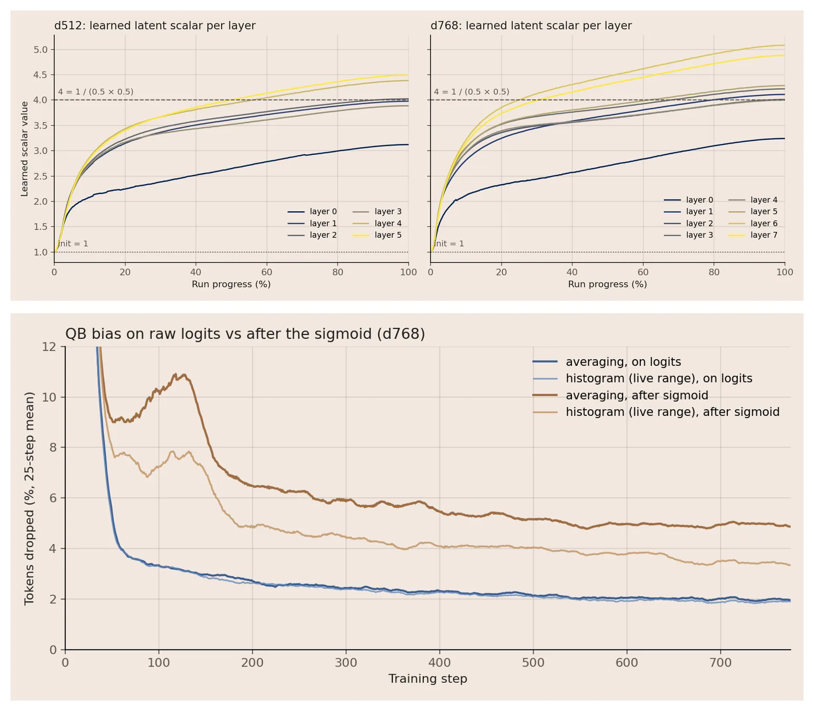
RMSNorm. Bottom: Applying QB bias to raw logits balances faster at ~2% drops vs. 3.4–4.9% for post-Sigmoid Kimi-K3-style binning. Source: Larry Dial, Open Athena (2026) [2].Histogram QB & Sigmoid Gate
For 64-way EP without cross-device quantile noise, Mochi replaces per-GPU top_k averaging with a 10,000-bin global histogram estimator (QbEstimator.HIST)[2][20]:
- Biasing raw logits instead of post-Sigmoid scores: unlike DeepSeek-V3 and Kimi K3 (which add bias inside $\sigma(s) \in [0, 1]$), updating bias directly on raw FP32 logits held drops around 2.0% and routing entropy at 4.848 (vs. a $\ln 128 = 4.852$ ceiling), compared with 3.4–4.9% drops and 4.786–4.821 entropy from post-Sigmoid binning.
- Single integer collective: the estimator finds global bounds via
pminandpmaxunderstop_gradient, builds local counts withjnp.bincount(10000), sums once across devices viapsum, and linearly interpolates the $(1-K/E)$ quantile $\beta_e$ with negligible overhead. - Unbiased 2.5 Sigmoid gating: top-8 experts chosen from $s + b$ receive weights $g_e = \frac{2.5\,\sigma(s_e)}{\epsilon + \sum_{k \in \mathcal{K}} \sigma(s_k)}$ using the original unbiased logits $s_e$. Fast 1–2 step QB recovery on sudden mix shifts and weaker gradients in layers 0–1 remain open items for future Marin runs[2].
Hybrid Attention, XSA & SConv
The remaining block choices in Mochi's 48 layers address specific throughput, stability, or KV-memory bottlenecks[2]:
- Asymmetric GQA and 2048 SWA: every fourth layer (plus layer 47) uses full global attention with 8:1 GQA (6 KV heads) and NoPE; local layers use 2,048-token sliding windows (2–4% slower than 512 in vLLM, yet 1.10× more compute-efficient at d768), 4:1 GQA (12 KV heads), and 50% Partial RoPE. Removing GQA altogether boosts compute efficiency by 1.18× at d768, but at an unacceptable long-context KV cache cost.
- Fixed 1.3 QK-Norm vs. learnable scaling: non-parametric QK RMSNorm scaled by 1.3 improved on no QK-Norm (3.0208 vs. 3.0281 at d768) and matched a learnable per-head scalar at d2048 (2.6477 vs. 2.6484, where the learnable scalar drifted from 1.3 toward 2.0), leaving straightforward headroom for manual context-extension temperature adjustments.
- XSA + Head Gate for warmup drops: subtracting each token's self-value projection $z_i = y_i - \frac{y_i^\top v_i}{\|v_i\|^2 + 10^{-6}} v_i$ and applying a zero-initialized head gate $2\sigma(x W_{\text{gate}}) = 1.0$ (since Hyperball forbids zero-initializing $W_o$) lets early attention behave nearly as a pass-through. On 100-step d6144 accelerated warmup, peak EP token drops fell from >50% (mean 12.7%) to 21% (mean 5.6%).
- GatedNorm and Embedding RMSNorm: rank-128 GatedNorm (optimized by MuonH, reaching 3.1352 at d1024 vs. 3.1392 under Adam) adds input-dependent gating after normalization, while adding RMSNorm after
token_embed(kept in plain Adam so its norm grows 177 → 7,800 for natural embedding LR decay) gains +19% compute efficiency. - Kernel-4 SConv excluding V: adapted from Inkling[36], identity-initialized causal convolutions masked at
segment_idsboundaries sit on K,attn_out, andmlp_out. Leaving V unconvolved keeps neighboring values from leaking into XSA's self-value subtraction for just +0.003 loss overhead, while identity init avoided the late-run washout seen with PKO-style init.
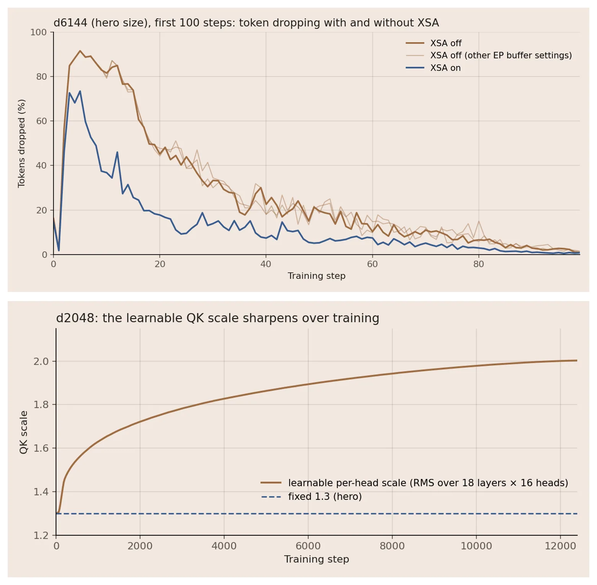
| SConv Variant (d1024) / QK Ablation (d768) | Paloma Loss | Compute Efficiency | Engineering Verdict |
|---|---|---|---|
SConv: K, V, attn_out, mlp_out (kernel 4) | 3.0378 | 1.19× | Hero keeps K, attn_out, mlp_out; drops V to protect XSA |
| SConv: All 4 sites (k=3 / k=2 / global only) | 3.0387 / 3.0440 / 3.0482 | 1.18× / 1.13× / 1.10× | Smaller kernels or 1/4-layer placement forfeit induction gains |
SConv: mlp_out / K / attn_out / V / None | 3.0506..3.0610 | 1.08×..1.00× | Site gains stack additively across Hero's three retained sites |
| QK-Norm (d768): Fixed 1.3 / Learnable / No mult / None | 3.0208 / 3.0217 / 3.0261 / 3.0281 | Baseline ref | Fixed 1.3 matches learnable scale with predictable tail scaling |
Core JAX / Equinox Implementation
The excerpt below condenses Marin's core forward implementation—combining XSA self-value subtraction, headwise sigmoid gating, raw-logit 10,000-bin Histogram QB, and Normalized LatentMoE[20]:
# Excerpt from experiments/grug/moe_hero_ep/model.py (commit 12d8b6f09f96)
def xsa_and_head_gate(attn_out, v, x, attn_gate, w_o, batch_spec):
aligned_v = reshard(align_kv_heads(v, num_q_heads=attn_out.shape[2]), _partition_spec_of(attn_out))
dot = jnp.sum(attn_out * aligned_v, axis=-1, keepdims=True)
v_norm_sq = jnp.sum(aligned_v * aligned_v, axis=-1, keepdims=True)
# Exclusive Self-Attention (XSA): remove self-value direction per head
attn_out = attn_out - (dot / (v_norm_sq + 1e-6)) * aligned_v
gate = 2.0 * jax.nn.sigmoid(jnp.einsum("bsd,dn->bsn", x, attn_gate))[..., None]
attn_out = jnp.reshape(gate * attn_out, (*attn_out.shape[:-2], -1), out_sharding=P(_BATCH_AXES, None, "model"))
return jnp.einsum("bsh,hd->bsd", attn_out, w_o, out_sharding=batch_spec)
def moe_forward_latent_qb(self, x_flat):
# 1. FP32 router reads full D=6144; QB bias applies to raw logits (stop_gradient)
logits = jnp.einsum("td,de->te", x_flat, reshard(self.router, P(None, None))).astype(jnp.float32)
biased = logits + jax.lax.stop_gradient(self.router_bias)
topk_biased, idx_plus_1 = jax.lax.top_k(biased, self.cfg.num_experts_per_token + 1)
qb_alpha, selected = topk_biased[:, -1:], idx_plus_1[:, :-1]
# 2. Unbiased Sigmoid weights renormalized to 2.5
raw_weights = jax.nn.sigmoid(jnp.take_along_axis(logits, selected, axis=-1))
weights = (raw_weights * (2.5 / (jnp.sum(raw_weights, axis=-1, keepdims=True) + 1e-9))).astype(x_flat.dtype)
# 3. Histogram Quantile Balancing over live [pmin, pmax] range of margins (s - alpha)
beta, lo, hi = _qb_beta_hist(reshard(logits - qb_alpha, P(_BATCH_AXES, None)), mesh=get_abstract_mesh(),
num_experts_per_token=8, num_experts=384, n_bins=10_000)
# 4. Normalized LatentMoE bottleneck: 6144 -> 3072 -> RMSNorm -> EP64 -> 3072 -> 6144
routed_in = self.latent_norm(jnp.einsum("td,dl->tl", x_flat, self.w_latent_down.astype(x_flat.dtype)))
routed_latent, overflow = self.expert_mlp(routed_in, selected.astype(jnp.int32), weights, report_capacity_overflow=True)
routed_out = jnp.einsum("tl,ld->td", routed_latent, self.w_latent_up.astype(x_flat.dtype))
return routed_out, {"qb_beta": beta, "overflow": overflow.total}Datakit 25T Data Pipeline
Public web corpora often share heavy hidden overlap across Common Crawl re-parsings and synthetic rewrites, and occasionally contain evaluation items inside training splits. Marin's Datakit[3] normalizes 152 raw HuggingFace repositories into a globally deduplicated, decontaminated, empirically mixed 200-bucket pool without rehosting mirrors, so upstream creator opt-outs carry over into future rebuilds[19].
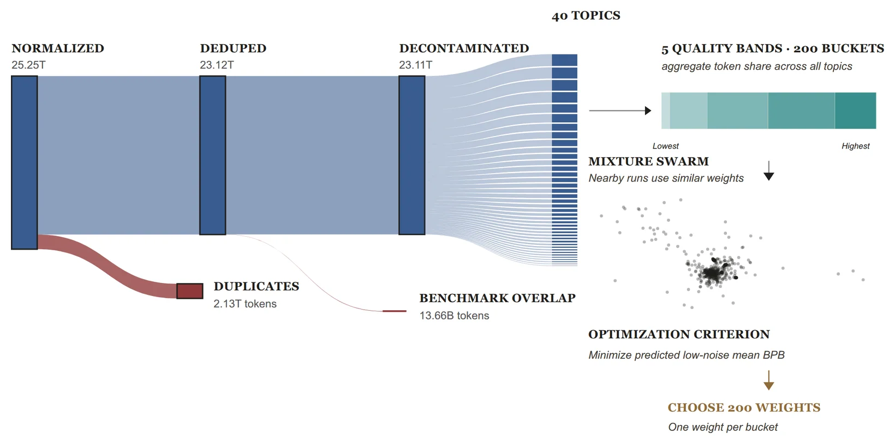
Ingestion, Dedup & Decontam
The pre-training pool begins from 152 pinned datasets totaling 18.71B documents (25.25T Llama-3 tokens), led by AI2, NVIDIA, HuggingFace, and HPLT alongside math, books, code, and reasoning traces (with Ben Feuer's 142 trace splits counted as one group; earlier planning snapshots cited 25.6T raw)[3]:
- Non-rehosting normalization: records standardize into sorted Parquet shards with content hashes and
source_idwhile compacting runaway whitespace (motivated by a real web page consisting of 99% spaces) and pinning commits so opt-out removals such as Stack v3 propagate on rebuild. - Exact + word 5-gram MinHash/LSH dedup: exact hashing drops ~505M copies (~500M within-source, ~5M cross-source), then word 5-gram LSH with verification removes near-duplicates—2.33B documents (12.5%) or 2.13T tokens (8.4%) in total. Notably, 93.2% of 686M cross-source links came from three dataset pairs (chiefly Nemotron synthetic rewrites overlapping Common Crawl seeds). Because naive LSH falsely collapsed DNA strings and JSON tool calls where single characters change semantics, Datakit exempted 16 sensitive sources (lifting the retained pool from 23.01T to 23.11T tokens)[19].
- 13-word Bloom decontamination: any document containing a paragraph with $\ge 50\%$ overlap in eligible 13-word $n$-grams against the Artificial Analysis Intelligence Index or Marin benchmarks (plus exact matching on short paragraphs) is removed, cutting 13.66B tokens. Remaining leaks are logged openly: 32B caught GSM8K contamination in Dolmino (lowering prompt-shifted evals until fixed in Mantis[10]), and Mochi traced a Penn Treebank leak at step 362k (~0.02 loss shift on 1/16 of Paloma[5]).
- AI-generated share (~25%) & structural junk filter: Will Held noted that roughly a quarter of the corpus is explicitly AI-generated text—which works cleanly alongside enough natural text, though it breaks classic typo-rate heuristics—so Datakit's classifier targets structural junk such as SEO spam and broken OCR rather than overly favoring textbook prose.
Harrier Buckets & Proxy Mix
Source-level weighting cannot cleanly separate math pages buried inside broad web dumps, so Datakit separates expensive embedding inference from cheap mixture searches:
- Precompute Harrier embeddings: Microsoft's Harrier retrieval model encodes every document once into a 1,024-dimensional semantic vector.
- Cluster 40 balanced topics: spherical $k$-means forms 5,000 fine clusters that agglomeratively merge into 40 evenly sized topics ($\ge 1\%$ corpus share each, keeping every mixture coordinate sensitive). Chang et al.'s 5-choice LLM Intruder Test scored 84.4% accuracy at 1,000 clusters and 62.5% at 40 topics vs. a 20% random baseline ($p < 0.001$).
- Score 5 quality tiers without pre-filtering: content-calibrated classifiers split each topic into 5 bands (40 × 5 = 200 buckets). Keeping the lower bands lets small budgets select only top quality while large runs trade a little quality to limit repetition.
- Simulated-epoching regression swarm: across 872 (later 1,000+) proxy runs in
grug-moe-mix-swarm, Marin scales down per-bucket pool size whenever run compute is $\le 10^{23}$ FLOPs so small proxies feel Mochi's exact epoch pressure (capped at $\le 2.09$ epochs under an 8.0 hard limit), then fits a repetition-aware RegMix surrogate targeting UncheatableEval BPB[19].
The resulting Harrier recipe splits into a 15T / 3.75T (80% / 20%) two-phase simplex scaled to Mochi's 18T schedule, packed via Feistel permutation into 4,096-token rows with segment masks isolating cross-document attention and SConv.
Scaling Laws & Scaling Ladder
Why test small runs as “wind tunnels” before committing three months to 704 GB200 GPUs[40]? Open Athena's scaling pipeline ties together four pieces: unbiased loss-surface fitting (VPNLS), compute-transferable optimizer recipes (Delphi), empirical LR/Adam scaling rules (MoeHeuristic), and a compute-matched 5-rung Scaling Ladder that forecasts Hero loss $300\times$ ahead of its largest small-scale rung.
IsoFLOPs, Chinchilla Bias & VPNLS
Starting from the 5-parameter Chinchilla loss surface over active parameters $N$ and training tokens $D$ constrained by compute $C \approx 6 N_{\text{act}} D$, substituting $N = C/(6D)$ writes each fixed-FLOPs slice as a univariate curve in $D$[41]:
$$L(N,D) = E + \frac{A}{N^\alpha} + \frac{B}{D^\beta} \qquad \Longrightarrow \qquad L(D; C) = E + A\left(\frac{6D}{C}\right)^{\alpha} + \frac{B}{D^\beta}$$Setting $\frac{\partial L}{\partial D} = \frac{\alpha A}{D}\left(\frac{6D}{C}\right)^\alpha - \frac{\beta B}{D^{\beta+1}} = 0$ yields the compute-optimal token/parameter scaling exponents and the envelope law in compute $C$:
$$D^*(C) = \left(\frac{\beta B}{\alpha A}\right)^{\frac{1}{\alpha+\beta}}\left(\frac{C}{6}\right)^{\frac{\alpha}{\alpha+\beta}}, \qquad N^*(C) \propto C^{\frac{\beta}{\alpha+\beta}}, \qquad L^*(C) = E + K \cdot C^{-\gamma}, \quad \gamma = \frac{\alpha\beta}{\alpha+\beta}$$Inverting a baseline curve $L_{\text{base}}(C) = E + A_{\text{base}} C^{-\gamma}$ defines Marin's two evaluation gauges[2][37], mapping any measured loss $L_{\text{new}}$ at compute $C_{\text{new}}$ to equivalent baseline compute $C_{\text{equiv}}$:
$$S_{\text{theo}} = \frac{C_{\text{equiv}}}{C_{\text{new}}} = \frac{1}{C_{\text{new}}}\left(\frac{A_{\text{base}}}{L_{\text{new}} - E}\right)^{1/\gamma}, \qquad S_{\text{real}} = S_{\text{theo}} \cdot \frac{\mathrm{MFU}_{\text{new}}}{\mathrm{MFU}_{\text{base}}}$$On Mochi's component benchmark curve $L(C) = 1.6 + 88.90 \cdot C^{-0.0941}$, $S_{\text{theo}} = 1.18\times$ means the baseline needs 18% more FLOPs to match that loss, while $S_{\text{real}}$ multiplies that ratio by measured GB200 MFU[2].
Standard Chinchilla Approach 2 estimates $(\alpha,\beta)$ indirectly by fitting parabolas to $(\log D, L)$ on fixed-compute bowls and regressing the parabola vertices against $C$. As Eric Czech showed in Problems with Chinchilla Approach 2[41], $L(\log D; C)$ is asymmetric whenever $\alpha \neq \beta$, so a symmetric parabola skews the minimum when grids are wide or uncentered—producing a ~6.5% compute misallocation (over $1M on Llama-3-scale pre-training) on clean IsoFLOP data.
To remove that parabolic bias without losing solver stability, Open Athena introduced Variable Projection with Nonlinear Least Squares (VPNLS)[41][42] for direct 5-parameter fitting: conditioned on candidate exponents $(\alpha, \beta)$, $L(N_i, D_i) = E + A N_i^{-\alpha} + B D_i^{-\beta}$ is linear in $\mathbf{c} = (E, A, B)^\top$ and solves in closed form via linear/IRLS least squares:
$$\min_{\alpha,\beta > 0}\; \min_{E,A,B \ge 0} \sum_{i} \rho_{\delta}\!\left(E + A N_i^{-\alpha} + B D_i^{-\beta} - L_i\right) \quad \Longleftrightarrow \quad \min_{\alpha,\beta > 0} \sum_{i} \rho_{\delta}\!\left(\bigl[\mathbf{\Phi}(\alpha,\beta)\,\mathbf{c}^*(\alpha,\beta)\bigr]_i - L_i\right)$$Reducing a non-convex 5D fit to a smooth 2D search over $(\alpha,\beta)$ lets Cython grid search + L-BFGS-B accept arbitrary non-IsoFLOP schedules, avoid local minima, and run 15.8× faster than apple/ml-scalefit (0.106s vs 1.672s, with lower Huber loss: 13.1 vs 13.4 × 10−6)[42].
Delphi 300× & Dense-to-MoE Speedup
Before scaling MoEs, Will Held built Delphi[40] (Qwen 3 dense architecture, Nemotron-CC + StarCoderData + ProofPile 2, WSD decaying to zero) to test why small-scale fits fail on longer token horizons. Attempt 1 used Cautious AdamC ($\eta = 0.33\sqrt{B}/H$, WD=0.1) and fit seven IsoFLOP buckets ($3\times 10^{18}$–$3\times 10^{20}$ FLOPs) smoothly, only to drift by 2.5% at $10^{22}$ FLOPs and diverge at $10^{23}$ FLOPs because larger token horizons scaled batch size and pushed peak LR too high.
Delphi Attempt 2 resolved that instability with three changes: swapping to Kaiyue Wen's AdamH so Frobenius projection stabilizes width transfer without weight decay or a $1/H$ factor; adding a $T^{-0.3}$ token-horizon decay inspired by Complete(d)P (echoed later by Ren et al.'s $T^{-0.320}$ on MuonH); and tuning jointly via Google Vizier around a reference point ($B_0=64$ seqs, $T_0=2.5\text{B}$ tokens, $\eta_0=0.00630$, $\eta_{0,\text{Adam}}=0.000656$, $\varepsilon_0=1.85\times 10^{-8}$)[40]:
- 300× Dense extrapolation within 0.2%: fit strictly on seven IsoFLOP optima ($3\times 10^{18}$ to $3\times 10^{20}$ FLOPs, Paloma 3.586 → 2.883), $L_{\text{dense}}(C) = 1.65 + 117.8 \cdot C^{-0.0966}$ predicted held-out runs at $10^{21}$ (2.759, +0.5%), $10^{22}$ (2.532, +0.2%), and $10^{23}$ FLOPs (25B / 600B tokens: 2.355, +0.2%). Across 3 random seeds, spread (~0.1%) was 10× tighter than the bootstrap 95% CI[40].
- Downstream emergence & overtraining tax: composing power-law fits on continuous soft evals (correct-choice log-prob for MMLU, BPB for HumanEval/GSM8K) with a sigmoid over public Llama/Qwen/OLMo checkpoints accurately predicted $10^{23}$ scores (~60% MMLU, 19% HumanEval, 27% GSM8K). Beyond optima, 10× overtraining costs ~6× compute on dense transformers vs. only ~2× on Marin MoEs[2][40].
- Dense → Marin MoE V1 (6.7× theoretical / 3.6× realized): switching to a 64-expert top-4 MoE at 62:1 optimal tokens/active-param yielded $L_{\text{MoE-V1}}(C) = 1.6 + 95.18 \cdot C^{-0.0941}$, forecasting $10^{21}$ (2.598 vs. 2.599) and $10^{23}$ (129B-A16B, 1T tokens: 2.252 vs. measured 2.234, -0.8%)[37].
- Four stacked pre-Hero upgrades (+2.1× theoretical / ~1.8× realized): adding 64→256 experts (1.4×/1.3×), MuonH (1.3×/1.25×), PKO + 50% Partial RoPE (1.2×/1.2×), and 2.5 Sigmoid rescaling (1.04×) shifted IsoFLOP minima toward fewer active parameters and more tokens (Fig. 6 bottom)[37]:
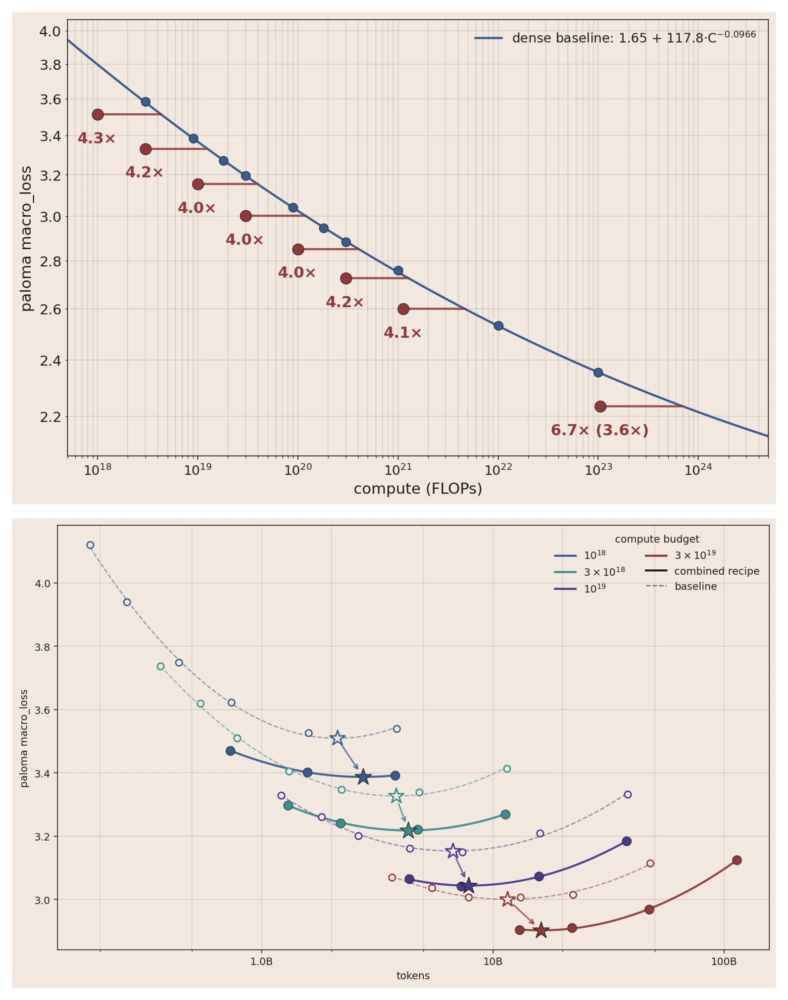
HParam & MoeHeuristic LR Law
To prevent LR tuning bias from masquerading as architectural gain, Marin sweeps learning rate per $(D, T)$ cell, fits a log-quadratic curve to held-out BPB, and regresses the optima $\eta^*(T, D, B)$ jointly in log-space across 19 cells (d512–d1280, depth $L \propto D$)[17][37]. Dividing by $D^{c}$ collapses all widths onto a single horizon power law ($\eta^*\cdot D^{-c} \propto T^b$):
| Marin Recipe Fit | Base LR Law ($\text{lr}_{\text{adam}}$) | Optimizer & Fit Diagnostics |
|---|---|---|
| MoE V1 | $1.680 \cdot T^{-0.2815} \cdot D^{-0.3721} \cdot \sqrt{B_{\text{seq}}}$ | AdamH; $R^2=0.994$ across 19 cells ($9.50\cdot T^{-0.281}\cdot D^{-0.372}$ at bs=32)[37] |
| May Recipe | $0.06602 \cdot T^{-0.395} \cdot D^{-0.150} \cdot \sqrt{B_{\text{tok}}}$ | Early MuonH fit; weaker width attenuation ($D^{-0.150}$), steeper horizon decay[17] |
Hero MoeHeuristic | $0.087571 \cdot T^{-0.3461} \cdot D^{-0.3448} \cdot \sqrt{B_{\text{tok}}}$ | MuonH ($\frac{13}{3}\text{lr}_{\text{adam}}$); $R^2=0.978$, calibrated from seq_len=8192 ($\frac{34.35}{\frac{13}{3}\sqrt{8192}}$)[17] |
Here beta1 = 0.90, linear warmup runs 1% with no global gradient clipping (max_grad_norm off), and LR decays linearly to 5% of peak (min_lr_ratio = 0.05). Because Hero rungs use 4.19M to 46.14M tokens/batch (well above 131,072), $\beta_2$ clips at 0.95 from d1024 onward[17].
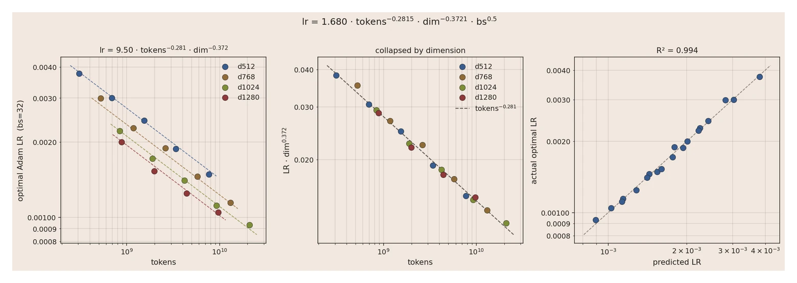
d512–d1280) onto one horizon line (middle), checking width-transfer stability before applying MoeHeuristic ($R^2=0.978$) to Mochi. Source: Larry Dial, Open Athena (2026) [37].5-Rung Scaling Ladder & Hero Results
Instead of spending 10 days on an extra $3\times 10^{23}$ rung, Mochi invested ~1% of Hero compute (2 days) into a 5-rung weak-scaling ladder[14][18] for four operational checks:
- Catching recipe or data issues early against prior MoE scaling laws;
- Measuring scale-dependent dynamics, confirming grad norms climb through ~40% progress before decaying and EP drops creep from 2.6% → 3.2% → 3.4%;
- Updating a preregistered forecast every 5% of training;
- Keeping a matched small-scale reference baseline if anomalies appear mid-Hero.
Because MoE IsoFLOP optima sit near ~60 tokens per active parameter (~1.4T tokens for 535B-A23B, making 18T ~13× overtrained at a ~2× efficiency cost)[2], every rung fixes TOKENS_PER_ACTIVE_PARAM = 791 and scales batch size with healthy NVL72 racks (1,024 × racks at 4K context), so d2048 ($9.2\times 10^{21}$ FLOPs) matches Hero's 46.14M-token batch and 11-rack collective traffic:
| Rung | Racks (GPUs) | Batch (Tok) | Steps / Tokens | Act / Total | FLOPs | Adam / MuonH LR |
|---|---|---|---|---|---|---|
d768 (8L) | 1 (64) | 1,024 (4.19M) | 11,420 / 48B | 61M / 1.6B | $5.5\times 10^{19}$ | 3.65e-3 1.58e-2 |
d1024 (12L) | 2 (128) | 2,048 (8.39M) | 15,276 / 128B | 162M / 4.0B | $2.7\times 10^{20}$ | 3.33e-3 1.44e-2 |
d1536 (16L) | 6 (384) | 6,144 (25.17M) | 15,128 / 381B | 481M / 11.5B | $1.8\times 10^{21}$ | 3.44e-3 1.49e-2 |
d2048 (22L) | 11 (704) | 11,264 (46.14M) | 20,072 / 926B | 1.2B / 27.7B | $9.2\times 10^{21}$ | 3.10e-3 1.34e-2 |
d6144 (48L) | 11 (704) | 11,264 (46.14M) | 390,251* / 18T | 22.8B / 535B | $2.7\times 10^{24}$ | 7.60e-4 3.29e-3 |
*$\beta_2 = 0.9685$ on d768 and clips to 0.95 from d1024 onward; d2048 hit a hardware crash at 81% progress (terminal points extrapolated); Hero (d6144) finished 390,251 main steps (~18.1T tokens) on November 5, 2026 before post-schedule 262K updates through step ~393,491.
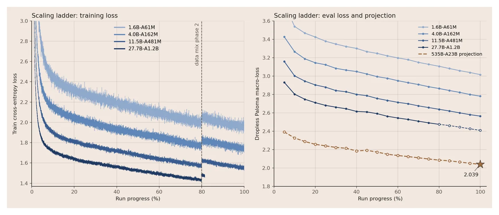
d2048 crashed at 81%, hollow markers extrapolated). Source: Larry Dial, Open Athena (2026) [2].Comparing Mochi's 4K ladder law against Marin's earlier TPU recipes (excluding lm_head compute, evaluated at $2.6\times 10^{24}$ FLOPs) confirmed there was no numerical penalty from moving TPU → GB200, even against compute-optimal runs[2]:
Marin Scaling Law (Excl. lm_head) | Fitted Power Law $L(C) = E + A\cdot C^{-\alpha}$ | Overtraining | Hero Projection ($2.6\times 10^{24}$) |
|---|---|---|---|
| Hero Ladder (4K, GB200) | $1.5 + 84.8 \cdot C^{-0.0900}$ | ~13× (791 tok/act) | 2.04 (2.039) |
| May Recipe (4K, TPU) | $1.6 + 88.3 \cdot C^{-0.0941}$ | Compute-optimal (~1×) | 2.05 |
| Snowball 67B-A2B (8K, TPU) | $1.4 + 84.7 \cdot C^{-0.0862}$ | ~100× | 2.07 |

535B Pre-Training Systems
With the scaling law and LR schedule locked by the 5-rung ladder, getting Mochi through 18T tokens on 704 GB200 GPUs came down to keeping EP communication inside NVL72 racks, fixing rare SPMD and embedding stability bugs, and pushing MFU higher over 390K steps.
Pooled-Wave & Ragged EP
Each healthy NVL72 rack connects 64 B200s (16 nodes × 4 GPUs, 11.6 TiB HBM) at 900 GB/s uni-directional NVLink, whereas inter-rack InfiniBand drops 18× to 50 GB/s[6]. Marin keeps EP=64 inside racks (6 routed experts/GPU: $\text{GPU}(e)=\lfloor e/6\rfloor$, $\text{local}(e)=e\bmod 6$, with FSDP managing dense/shared weights inside the rack) and DP=11 across racks—delivering $46{,}137{,}344$ tokens/step ($65{,}536$ tokens and $524{,}288$ top-8 assignments per GPU).
At launch on August 20, 2026, existing open-source EP kernels (DeepEP, Hybrid-EP, MoonEP) did not fit JAX/NVL72, and OpenXLA's early ragged_all_to_all stalled at 15% MFU with NCCL hangs. Guided by XProf/Nsight telemetry on Iris, Rafal Wojdyla shipped a static capacity-bounded kernel—Destination-Pooled Static-Wave All-to-All—to launch above 20% MFU[21]:
| EP Dispatch Design | Buffer Allocation | Production Trade-Off on NVL72 |
|---|---|---|
| Source × Expert grid | Fixed slot per (src GPU, dst expert) | Idle expert slots cannot help congested sibling experts on the same GPU |
| Pooled + Static Waves (launch) | 1 shared pool per dst GPU × 3 waves (CF 1.15) | Uses 1/3 peak HBM, packs local_id (0..5) header in payload; drops ~3.4% |
| Ragged All-to-All (step 82k+) | Exact dynamic slice counts per pair | Eliminates overflow (0.01%–0.03%) and reaches 23% → ~30% MFU |
- Destination pooling + inline headers: all 6 experts on a target GPU share one sender pool of capacity $C_{\text{pool}} = \lceil \frac{1.15 \times 524288}{64 \times 3} \rceil = 3{,}141$ per wave, packing
local_id(0..5) in an extra BF16 header row to skip a separate metadata collective. - 3 striped static waves: assignment index $r$ maps to $\text{wave} = r \bmod 3, \text{slot} = \lfloor r/3 \rfloor$; each wave dispatches, compacts into $[6, 33497, 3072]$ round-robin across senders, runs batched
6×SwiGLU, and combines into an FP32 accumulator. - Irreversible truncation (
A..Irule): rows exceeding the pool (3,141) or expert buffer (33,497) drop permanently—never retrying in Wave 2, contributing zero, and never renormalizing surviving routing weights. Both sender and receiver overflow must divide by raw total assignments.

Five pre-launch stress checks—including a 4K → 65K test where 37% dropping stayed within 0.008 dropless Paloma loss of FSDP—validated the launch setup. Around step 82,000 (~21% progress), Matt Wittmann landed fixes in XLA:GPU and NVIDIA's device-initiated ragged All-to-All kernel, dropping overflow to 0.01% at 4K (0.03% at 65K) and raising MFU from 21.5% to 23%, then ~30% with SM100 FA4 and mask-free MLP updates[6][38]:
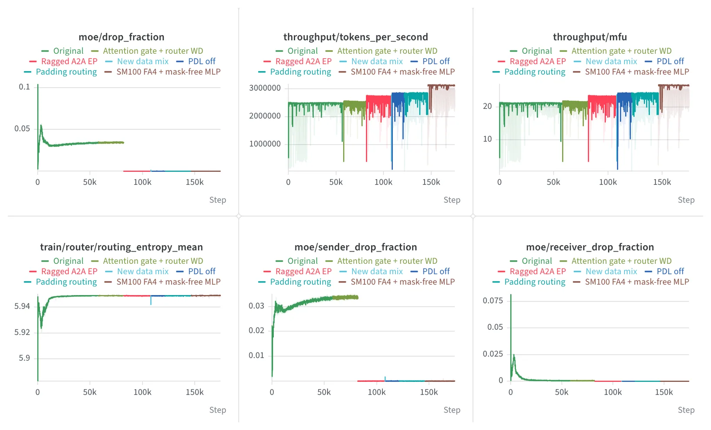
MuonH & Numerical Stability
Pre-launch GPU stress runs surfaced three subtle failure modes before Mochi reached step 0[2]:
- SPMD sharded norm over-counting: roughly once per 10,000 steps in 1-in-10 runs,
jnp.linalg.normover SPMD intermediates over-counted, snappinglm_headnorm from 150.7 to 21.4 at step 24,682 and spiking loss from 2.07 to 9.14 while total norm moved just 0.24%. Pinning intermediate sharding explicitly and using FP32 sum-of-squares fixed it. - Embedding Hyperball spikes: raising embed LR by $1.2\times$ under AdamH amplified gradient spikes 6× → 60× → 700×; keeping
token_embedin plain Adam eliminated spikes. - No-z-loss instability: removing logit $z$-loss pushed loss back up to 3.39 by step 11,000 as the learnable RMSNorm gain entering
lm_headgrew to 557 (vs. 183 with $z$-loss) even whilelm_headstayed on the Hyperball.
| Optimizer Group | Assigned Parameter Leaves | Update Rule & Hardware Optimizations |
|---|---|---|
| MuonH ($\text{lr}=\frac{13}{3}\text{lr}_{\text{adam}}$) | 2D/3D/4D Attention, routed & shared experts, w_latent_down/up, rank-128 GatedNorm | Nesterov ($\mu=0.95$) + 5-step quintic BF16 Newton–Schulz (intra-rack only via QuACK symmetric X@X.T) + $\sqrt{\max(1, d_{\text{out}}/d_{\text{in}})}$ + Hyperball |
| AdamH ($\text{lr}=\text{lr}_{\text{muonh}}$) | Untied output_proj / lm_head | Dense softmax gradients handled via Adam direction + Hyperball; beats Cautious AdamW by 1.08× |
| Plain Adam ($\text{lr}_{\text{adam}}$, no WD) | token_embed, .router, attn_gate, 1D norm gains, SConv kernels | Unconstrained norm (177 → 7,800 embed growth acts as relative LR decay); router_bias frozen outside optax |
Systems throughput pairs BF16 compute with FP32_PINNED_HOST master weights/moments, recompute_all rematerialization, FlashAttention-4 (gpu_fa4_cute), full-shard fused cross-entropy tiling (b=65536, v=4096 cutting CE latency 171.3 ms → 81.9 ms at +0.04 GiB HBM), linear decay (beating WSD and matching $1-\sqrt{t/T}$ without risky early peak LR), and hourly rolling checkpoints.
# From experiments/grug/moe_hero_ep/adamh.py & optimizer.py (#8073 SPMD norm fix)
def _scale_invariant_2d(p, u, lr):
p_norm = jnp.sqrt(jnp.sum(jnp.square(p.astype(jnp.float32))))
u_norm = jnp.sqrt(jnp.sum(jnp.square(u.astype(jnp.float32))))
new_p = p - lr * u * p_norm / jnp.maximum(u_norm, 1e-10)
# Pin intermediate sharding to p's NamedSharding so reduction doesn't over-count under SPMD
new_p = jax.sharding.reshard(new_p, _target_named_sharding(p))
new_p_norm = jnp.sqrt(jnp.sum(jnp.square(new_p.astype(jnp.float32))))
return new_p / jnp.maximum(new_p_norm, 1e-10) * p_norm - pTogether, EP64/Ragged All-to-All transport, three-group Hyperball optimization, and hourly region-local checkpointing kept Mochi completely spike-free across all 390,251 main pre-training steps (~18.1T tokens finished November 5, 2026 before post-schedule 262K updates):

Mid-Training & 262K Context
Short-window web training leaves reasoning-dense code/STEM underweighted and does not teach long-range retrieval. Mochi handles both through Phase-2 cooldown mixing, checkpoint weight averaging, and staged 4K → 262K context extension[1][5].
Cooldown & Weight Averaging
At ~80% run progress (October 22, 2026), Mochi switched to the updated Harrier Phase-2 cooldown mix while decaying linear LR smoothly toward 5% peak. Unlike the scaling ladder (where an earlier Phase-2 mix caused a brief loss bump), Hero's refined mix lowered train and held-out loss smoothly.
During the last 5,000 steps of 65K extension, Marin saved checkpoints every 500 steps and took an unweighted checkpoint weight average[1][2]. Weight averaging lowered eval loss consistently across every validation domain, seeded post-schedule 262K runs, and produced 57 public HuggingFace checkpoints on open-athena/Marin-Mochi-535B-A23B (47 pre-training + 10 long-context)[5]:

Context Extension & QK Scale
Mochi started at 4K rather than 8K (doubling sequences per batch to calm early EP drops)[14] and held 46.14M tokens/step fixed while expanding context in three stages[2]:
- 4K → 16K (October 14, ~65% progress): raised
qk_multto 1.48; re-scoring checkpoints at 4K confirmed the raw 0.031 drop reflected longer prefixes rather than core capability changes, keeping ladder tracking aligned. - 16K → 65K (step 372,000, November 1): bumped
qk_multto 1.66 and capacity headroom (drops stayed at 0.03%) while longer FA4 tiles pushed realized MFU toward ~30%. - 65K → 262K post-schedule (November 6–9): resumed from weight-averaged checkpoints with long-document upsampling and a floored, squared SSMax-style log multiplier tuned by Matt Wittmann on Mochi's 12 global NoPE layers ($n > 65{,}536$):
Because 50% Partial RoPE sits strictly inside 2,048-token sliding windows while all 12 global layers are NoPE, scaling to 262K only needed attention temperature sharpening without touching rotary wavelengths.
Post-Training SFT
On November 17, 2026, Open Athena released Mochi's un-instruction-tuned base checkpoints (open-athena/Marin-Mochi-535B-A23B)[5], while earlier intermediate Mochi checkpoints had already passed initial RL readiness checks (Section 8.6)[50]. Ahead of full 535B post-training, the team used Snowball 67B-A2B (10T TPU pre-training, outperforming Marin 32B at 10× fewer FLOPs and 16× fewer active parameters) to iterate on an openly tracked, continuously revised post-training pipeline[8].
Task Environments & Lineage
As David Hall notes in There Is No Post-Training Data Commons[9], pre-training draws on existing text archives, whereas agentic RL requires constructing deterministic tasks combining a sandbox environment, a user intent, interactive tools, and an executable verifier. Even software engineering is hard to curate at scale: SWE-bench narrowed 90,000 Python PRs to 11,407 test-linked PRs and lost ~80% to broken environments (leaving 2,294); OpenAI flagged over two-thirds of 1,699 during Verified audit (down to 500, with ~1/6 still flawed); TaskTrove discarded >90% of 5,000 Java and 98% of Python bundles; and a Vals audit found two-thirds of Xiaomi MiMo v2.6's 2,698 public environments leaked git fixes.
By integrating SkyRL and Harbor into Marin's monorepo, Ben Feuer and collaborators organized 100+ post-training runs into a 14-node DAG linking SFT, RLVR, FTPO (including full-v1/v2 and Antidoom tracks), and DARE-TIES-02 merging before Smartie RLVR shipped Snowball v0.1 (68.4% tournament win rate, matching GPT-OSS-20B)[8][49]:

General SFT & Datakit Harmony
Domain specialists such as Coding SFT and Relay SFT do not start straight from a raw pre-trained checkpoint—they inherit the general post-training base Snowball 09-21 (open-athena/)[43]. Its role is to establish shared reasoning, multi-turn chat, tool calling, and termination conventions while preserving base representations through 20% long-context replay:
| 09-21 Datakit SFT Config | Published Model-Card Specification[43] |
|---|---|
| Data sources | 203 SFT leaf sources (sources smaller than 1 sample per 64K block are pooled so they stay sampleable; 1-epoch loader limit) |
| Schedule mix & scale | 80% SFT (53.69B positions) + 20% long-context pre-training replay (13.42B; teams are separately sweeping 5%–60% replay[54] for Mochi's final SFT mix); ~67.1B (67,108,864,000) total scheduled positions (1,000 updates from step 157,000 to 158,000, batch 256 × 262,144) |
| Major SFT families | nemotron_sft_v3 (54.83%), open_swe_traces (7.56%), superior-reasoning (5.36%), plus penfever-traces (2.28%), massive_function_calling (2.27%), synthetic-1 (2.27%), coderforge (1.94%), openthoughts4, and nemotron-terminal |
| Protocol learning | Peak base lr=5e-5 (resumed optimizer, no warmup); no new vocab rows added, while updates to 7 special-token rows in input embeddings and lm_head (initialized from role, message, think, answer, tool, end, EOS; only those lm_head optimizer states reset) scaled by $\sqrt{32}$ (2.83e-4); dual stop IDs 128001 and 128009 |
| MoE routing state | Router weights trainable; router balancing biases and deferred load-balancing bias updates frozen |
Two caveats from the model card are worth keeping explicit. First, 67.1B counts scheduled token positions (including padding and replay), not unique corpus size or loss-bearing tokens. Second, 262K is a configured context setting whose long-context behavior remains unverified on this research checkpoint[43].
To turn heterogeneous raw chats into training batches, current Datakit post-training documentation (describing the current pipeline rather than retroactively claiming every check was already active on 09-21) specifies five engineering steps[44]:
- Unified Harmony structure: Zephyr batch transforms and schema-checked converters map diverse sources into structured Harmony Parquet (
CHAT_SCHEMA), separating speaker roles, reasoning (reasoning_content) vs. answer channels, and tool recipients. - Tool-call IDs & prompt completeness: keeps
tool_callIDs paired with their responses, passes function schemas viachat_template_kwargs, and drops records missing original user prompts or tool definitions (withSTRICTvs.REPAIRparsing modes for Terminus traces, rejecting tool calls inside unclosed reasoning). - Structural validation, normalization & exact dedup: verifies schema invariants (failing the run if >5% of inputs are empty or malformed), normalizes text, deduplicates exact conversations, and records separate conversion and normalization counts.
- Structural validity ≠ answer correctness: validation checks schema compliance and deduplication—it does not verify whether reasoning steps or final answers are factually correct.
source_train_turnsis provenance, not a loss mask: because Harmony rendering can split reasoning and answer spans into separate output blocks,source_train_turnsis not applied directly as a loss mask; supervision positions must be aligned against the final rendered token sequence.
Coding SFT & Relay SFT
Starting from Snowball 09-21 (12.8% SWE-bench), standard domain SFT on Qwen3.8-27B CalibForge trajectories plus Kimi demonstrations reached 46.5%[11]. To address exposure bias—teacher models rarely encounter the off-track states a student puts itself into—Donghyun Lee implemented Relay SFT[13], an interactive DAgger-style handoff between student and teacher:
- Student acts on half the turns (
loss_mask=0): Snowball generates 52% of turns in the final check (about 24% of a median 40.9k-token row), retained as conditioning context with loss masked out. - Three takeover triggers for Qwen3.8-27B (
loss_mask=1): invalid actions trigger a 1-turn teacher repair R (241 repair-only rows, 15% of episodes and 27% of Relay trained tokens, after which Snowball resumes); context exhaustion triggers full handover (54% of trained tokens, 44% solve rate); prematuredoneclaims also trigger handover (8% of tokens, 81% solve rate, with Qwen running verification checks in 97% of passes). - Engineering fixes & paired evaluation: moving to per-GPU serving eliminated 42% queue timeouts, and stripping leaked student tags (
<tool_call>,<|end_think|>) reduced marker imitation from 22% to 0.1% (though Qwen still echoed student prose-before-JSON in 69% vs. 40% of turns, and an experimental verify-note more than doubled reply lengths from 744 to 1,757 tokens). While Relay raised teacher-assisted episode completion (74.4% vs. 64.4%), under matched precision and length budgets on the paired v2 set, standalone Relay matched standard SFT on SWE-bench (47.0% vs. 46.5%) and trailed slightly after 30–60 RL updates (43.5% vs. 50.5%).
| Paired v2 SFT Arm (808 Pass + 808 Verified Fail) | Relay (DAgger S/R/T) | Qwen Alone |
|---|---|---|
| Unique tasks (all ≤2 rows/task; ≤65,536 tokens) | 1,225 tasks (fail from 649) | 1,194 tasks (fail from 599) |
| Trained Qwen tokens inside student episodes | 14.69M (93% inside 09-21 states) | 14.18M (0% student prefix) |
| Median total turns / mean Qwen turns / think tokens | 18 turns (9.9 Qwen) / 1,723 mean | 10 turns (11.3 Qwen) / 1,529 mean |
| Teacher-assisted full episode pass (pilot paired CI) | 74.4% of 7,427 (60% pilot vs 54%) | 64.4% of 3,546 |
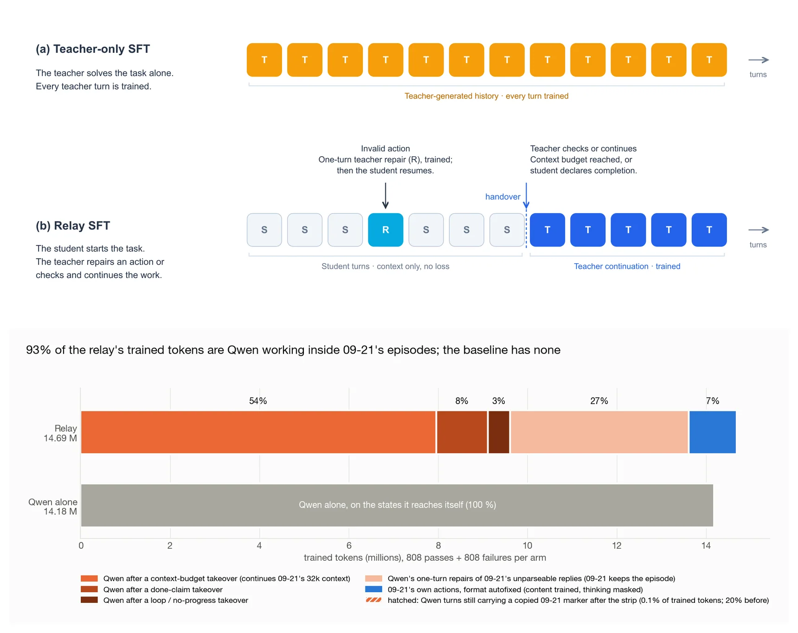
Plateau Dropping & Footguns
Longer SFT improves pass@1, yet collapses output entropy and multi-seed pass@8 coverage, leaving less signal for GRPO. Rather than comparing against an external reference model (Rho-1) or dropping entire trajectories (TailSFT, Selective Backprop), Harshit Varma et al. proposed token-level, history-driven Plateau Dropping[12]:
$$\delta_i(j) = \frac{\bigl|\ell_i^{(j)} - \ell_i^{(j-1)}\bigr|}{\max\bigl(\ell_i^{(j-1)}, \varepsilon\bigr)}, \qquad \alpha_i(j) = \mathbf{1}\!\Bigl\{\delta_i(j) \lt \tau \;\wedge\; \delta_i(j-1) \lt \tau\Bigr\}, \qquad \mathcal{L}_{\mathrm{PD}}(\theta) = \frac{\mathbb{E}\bigl[\sum_i w_i (1-\alpha_i) \ell_i(\theta)\bigr]}{\mathbb{E}\bigl[\sum_i w_i (1-\alpha_i)\bigr]}$$With $\tau=0.1, \varepsilon=0.05$, any assistant token ($w_i=1$) whose loss moves less than 10% across two consecutive epochs ($j \ge 3$) has its gradient zeroed while keeping its context and host-RAM loss table updated (11 B/tok, or 6.65 GB vs. 805 GB optimizer state, adding +1.3% step time: 9.20s vs. 9.08s), allowing it to resume training later if its loss begins changing again. Tested across 10 epochs on 319M SWE traces (Open-SWE-Traces) and 45M terminal traces (after fixing Harbor's git clean -fd deletion of newly created agent files), two main findings stood out:
- Outperforms TailSFT despite high Coverage Ratio: even with SWE TailSFT coverage ratios of 3.1 at $k=8$ and 12.8 at $k=16$, all three TailSFT variants trailed standard SFT at 3 epochs, whereas Plateau Dropping reached 31.9% / 67.0% at 3 epochs and 48.8% / 77.5% at 10 epochs—preserving 57 vs. 48 GRPO-learnable tasks and 1.19 vs. 0.72 nats entropy. On
django__django-11477, standard SFT repeatedly patchedtranslate_url(0/16), while Plateau Dropping kept alternative solutions like refactoringResolverMatchalive. - Dropping both “learned” and “stuck” tokens is necessary: masking only the 56% learned tokens ($\ell < -\ln 0.9$) matched standard SFT (40.8% / 69.0%); masking only the 5% stuck tokens recovered full pass@1 (48.9%) and half the pass@8 gain (74.0%); excluding both (62% by epoch 10) produced the full 77.5% average (78.0% single-order) gain.

| Snowball 09-21 SFT Ablation (8 seeds) | Dropped | SWE @1 / @8 | TB-Lite @1 / @8 | Entropy (Other / Stuck / Uncertain) |
|---|---|---|---|---|
| Base (09-21) | 0% | 19.3% / 46.0% | 16.6% / 50.5% | 1.24 / 1.48 / 1.85 nats |
Vanilla SFT (3ep, lr=1e-4) / TailSFT best (3ep) | 0% / 50% seq | 23.4/58.0% vs 23.4/51.0% | — | TailSFT Coverage Ratio = 3.1 (@8) |
Plateau Dropping (3ep, lr=1e-4) | ~48% | 31.9% / 67.0% | — | Beats TailSFT +16.0 pp pass@8 |
| Plateau Dropping: Learned-only / Stuck-only (10ep) | 56% / 5% | 40.8/69.0% vs 48.9/74.0% | — | Stuck-only gives +half @8; both needed |
Vanilla SFT (10ep, best lr=3e-4) | 0% | 49.9% / 73.0% | 33.9% / 64.9% | 0.33 / 0.63 / 0.72 nats |
Plateau Dropping (10ep, lr=1e-4, clip=4) | 62% | 48.8% / 77.5% | 36.1% / 68.0% | 0.73 / 1.05 / 1.19 nats |
Appendix A of the Plateau Dropping paper also documents four SFT infrastructure bugs that distorted earlier runs until fixed[12]:
- BF16 master weights rounded small updates to zero: importing checkpoints in BF16 (8-bit mantissa) rounded updates below ~0.4% of weight magnitude to zero, leaving 92–95% of weights unchanged after 1,520 steps (loss stalled near 0.55). Switching to FP32 master weights raised active updates cleanly (65% → 89%). The same BF16 storage bug later recurred in Marin's long-loop SFT sweeps[54], rounding 8.2% of an expert bank even during a 15-step zero-LR pass and holding
lr=2e-5back (214 vs. 284–293 / 855), invalidating early MuonH vs. Adam comparisons. - Capacity factor
CF=1.0overflow added 0.067–0.082 nats: raising expert capacity factor to 2.0 cut token overflow from 14–19% to 0% and matched reference inference NLL within 0.0002. - Packed padding skewed nominal epoch counts: with 26% padding in 64K SWE rows and 16% in 32K terminal rows, 10 nominal epochs equaled only 7.4 and 8.6 actual data passes.
grad_clip=1.0penalized Plateau Dropping: averaging gradients over 38% active tokens doubles or triples gradient norms, triggering clipping on 50–100% of steps. Training loss stayed almost identical (0.347 vs. 0.346), yet pass@8 dropped 6.0 pp (from 78.0% underclip=4.0down to 72.0%).
RL, Merging & Mochi Readiness
Marin's reinforcement learning work is not one uniform coding run, but five distinct threads: preemptible TPU async RL[39], Math RLVR (2.7T)[45] and Broad-Domain RLVR (10T)[46], the release pipeline shipping Snowball v0.1 through FTPO → Campaign2 Merge → Smartie RL[47][48][49], multi-turn coding-agent GRPO[11], and MoE routing plus 4K readiness checks on Mochi 535B[50].
Math & Broad-Domain RLVR
Marin's early Async RL on TPUs effort validated synchronous RLOO against Tinker LoRA baselines and introduced Arrow Flight BF16 weight streaming (cutting sync payload 32 GB to 16 GB and time 29s to 14s with background hot-reload, a 1.21× speedup). It also resolved early stack bugs (tpu-inference converting top_k=-1 into greedy 1, DAPO example-level normalization penalizing long chains by -13%, unseeded vLLM requests, and missing KL causing step-250 drift) and verified lossless preemption resume under Iris over 500 steps[39].
On the earlier 2.7T Snowball branch, a 25-checkpoint non-agentic Math RLVR study (starting from grug-67b-a2b-sft-s2-thinking-step630, where repaired run E6 raised AIME24 17.67% → 27%, MATH-500 64.00% → 78%, and OlympiadBench 12.67% → 20%) surfaced five practical lessons[45]:
- Train reward and pass@k diverge from held-out gains: E6-Repro beat the original E6 on training reward and train pass@16 from step 1, yet scored lower across all three held-out math benchmarks (19.67 / 73.60 / 20.00 vs. 26.00 / 76.80 / 22.67).
- Dataset and GRPO/DAPO interactions: DeepScaleR beat RLVR-MATH on hero-v3g/E12 under both GRPO and DAPO, then flipped under GRPO with stochastic-rounded AdamW (E17f trailed E17a by -1.33 / -14.80 / -10.34). DAPO beat GRPO on DeepScaleR yet trailed on RLVR-MATH.
- MuonH showed no held-out advantage over AdamW: once parameter-group learning rates were aligned, AdamW converged faster to higher peak reward; MuonH tolerated larger step sizes without consistent held-out gains.
- Budgets, loops, and termination shape benchmark scores: excessive output lengths and non-termination complicate score interpretation—E17a's gain came mainly from shorter answers and cleaner formatting.
- Router-bias export handling alters inference: mutable
replacebias mode caused raw-export collapse until patched by an SFT router-bias transplant, while frozen-bias runs verified exact tensor match across all 26 router-bias tensors after BF16→FP32 export widening, while still showing separate non-termination failures.
On the 10T Snowball branch, Broad-Domain RLVR[46] (covering Nemotron Ultra math, coding, instruction following, and tool use on 80 H100 policy + 48 inference GPUs at 512 × 16 with Megatron router replay) feeds straight into Antidoom and the Campaign2 merge. Expanding per-turn generation caps (16K → 32K → 48K) reduced first-batch $T=1$ length cutoffs from 18.4% → 12.7% → 9.7%.
Late steps, however, revealed sharp fragility: the unpenalized Antidoom RLVR1 arm reached 34/100 (0.3705 mean verifier score) on the 100-prompt holdout at step 12 before dropping to 2/100 at step 20. Restarting from step 12 with a fresh optimizer, frozen colocated reference KL (0.01), entropy weight 0.001, and sequence-mean loss reached 42/100 at Reference-KL Step 20 (0.4465 mean score; steps 22–30 eased back to 33–37/100)—a development-set checkpoint selection rather than a matched cross-run control[46]. Both campaigns underscore the same rule: broad capability gains, behavioral stability, and retention of untouched skills have to be checked together.
FTPO, Merging & Smartie RL
Moving Snowball checkpoints to the public v0.1 release ran through three stages outside coding GRPO: targeted loop repair (FTPO), constrained model merging, and Smartie multi-domain RLOO-N.
FTPO (Dr. Doom) and Protocol Repairs: solving tasks and terminating cleanly under formatting contracts are separate optimization targets. Targeting repetitive loops on Snowball 09-21, online Final-Token Preference Optimization (FTPO)[47] collects greedy rollouts (keeping exact token IDs and top-32 logits), flags $\ge 8$ consecutive repeats up to period 4,096 reaching EOS, and—precisely at the first loop onset boundary—pushes alternative tokens above the repeated token by a margin while anchoring logits to a frozen reference model via MSE (with task accuracy tracked separately).
On mixed-long-smoke v2, update 2 (40 H100s, lr=2e-7), exact 16K math loops fell from 139/512 (27.15%) to 12/512 (2.34%) while math accuracy rose from 45.31% to 55.27%, and 32K cross-domain loops fell from 43–44% to 19/100 (26 verifier passes)—still short of the <5% / <2% per-domain target across IF, coding, and tool math, and confounded partly by runtime and weight-loading differences. Across follow-up protocol-repair trials[51], localized fixes (FTPO on tool openers or tiny FP32 SFT slices for broken JSON edits) beat global DPO, which quickly degraded multi-harness tool accuracy:
| Protocol Repair Experiment | Target Defect | Measured Outcome & Side Effects |
|---|---|---|
| Dr. Doom FTPO ([47]) | Exact doom loops (09-21) | 16K math loops 27.15% → 2.34% (acc 45.3% → 55.3%); 32K cross-domain 43–44% → 19/100 |
| BFCL Protocol FTPO ([51]) | Repeated <tool_call> openers | Repeated openers 72/156 → 1/156 (-98.6%); valid first call 21 → 42/156; BFCL-Parity/Pi 30 → 43/123 (IFBench 82 → 78/300) |
| BFCL Native DPO ([51]) | Global preference recovery | Collapsed: BFCL Pi 34/123 → 10/123 (step 4) → 0/123 (step 8); weak cross-harness transfer |
Synthetic Pi edit SFT ([51]) | Malformed nested JSON edit (524/576 broken calls) | Replacing just 41/4,800 rows (FP32) doubled edit-call pass rate 63 → 120 / 855 |
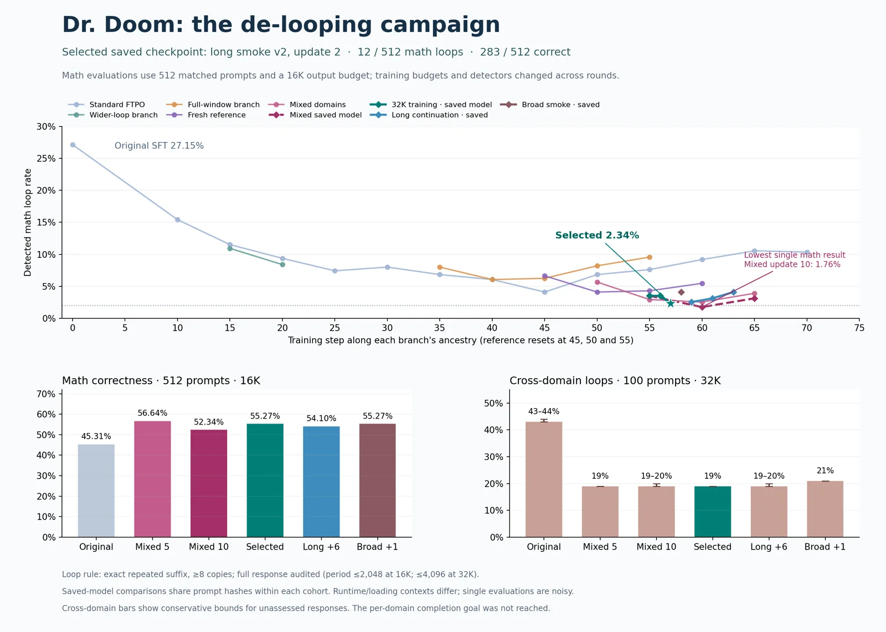
Model Merging (Campaign2 & DARE-TIES-02): earlier unconstrained expert-transfer merges (Shared100/Shared075) reached 36.50% NUPA200 and 48.78% BFCL-Parity yet kept just 0.76% of Base weights, causing side regressions such as MATH-500 95.0% → 89.8% and GPQA-Diamond 67.3% → 52.2%. Campaign2[48] therefore required keeping at least 75% of Base scalar weights and all non-weight files across three parents: Base (Antidoom Step12), the campaign-labeled NUPA specialist (10T-Mixed-RLVR-Sync Step92), and the BFCL specialist (Reference-KL Step20). Merging within the R25 routed-expert support (1,705 blocks, density 0.20, 0.50/0.50 deltas), DARE-TIES-02 changed only 6.04% of parameters (93.96% Base untouched) and won selection (0.627)—yet its dev scorecard read 45.53% BFCL-Parity/Pi and 0.00% NUPA200, showing that constrained merges limit parameter drift rather than guaranteeing lossless combination, so full benchmark selection still decides the winner.
Smartie Pre-Release RL: public Marin-Snowball-67B-A2B-v0.1 followed the release chain DARE-TIES-02 → Smartie .32 Async RLOO-N + TIS → step 14 → Snowball v0.1[49] (step 14 was the highest-scoring retained checkpoint after step 12's 50.33% was pruned by rolling checkpoint cleanup). Using Async RLOO-N (neutral masking omitting infra failures from baselines) with truncated importance sampling, token-mean loss, no KL/entropy/FTPO penalty, 512 accepted prompt groups × 16 responses (64 H100 policy + 48 inference GPUs), and lr=4e-6 across 69,487 tasks (12,123 NVIDIA Nemotron-RL-Ultra + 57,364 synthetic structural closure), native dev pass@1 rose from 41.21% to 50.22% and NVIDIA reward rose from 40.59% to 55.50% at step 14.
Two caveats guard against over-interpreting that curve. Because shuffle: false placed NVIDIA rows ahead of structural closure, file ratios did not match batch exposure (and the step-16 training-reward jump reflects task ordering rather than a sudden gain), while structural-closure mean reward dropped from 39.09% to 32.92%. Post-release diagnostics showed how this showed up on agent harnesses[52]: Snowball v0.1 doubled step counts over v0 (median 26 vs. 14 on TBLite, with 49/99 1,800s timeouts and 59/100 SWE runs hitting 32K), while tripling the timeout to 5,400s solved only 1 extra task (23 → 24/100), showing verbosity rather than hard clock limits drove timeouts; unclosed or stacked <|start_think|>/<|end_think|> spans also occasionally leaked into replies because the parser stripped only the first think span.
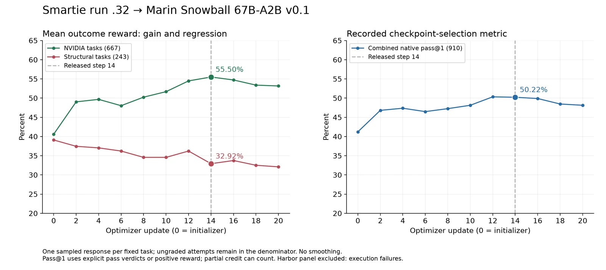
| Snowball RL Track | Starting Point | Tasks | Algorithm & Scale | Outcome & Role |
|---|---|---|---|---|
| 2.7T Math RLVR ([45]) | 2.7T SFT-s2 | Math (DeepScaleR, RLVR-MATH, DAPO-17k) | GRPO / DAPO, AdamW vs. MuonH, FSDP2 | Feasibility & negative findings (E6 78% MATH-500; reward/eval & router-bias pitfalls) |
| 10T Broad RLVR ([46]) | 09-21 SFT / Antidoom step-45 | Nemotron Ultra (math, code, IF, tools) | 512 × 16, 80+48 H100s, router replay, ±Ref-KL | Produced Campaign2 parents (Step12, Ref-KL Step20); exposed step-20 collapse |
| Coding-Agent GRPO ([11]) | 09-21 / CalibForge+Kimi SFT | 1,833 repos (R2E-Gym + TMax) | GRPO, 64 × 8, lr=5e-7, 30–60 steps, TITO + EAGLE-3 | Dedicated coding-agent study (50.5% SWE r100, 23.9% TB2.1, 45.1% TBLite) |
| Release Smartie .32 ([49]) | Campaign2 DARE-TIES-02 | 69,487 (12,123 Nemotron + 57,364 closure, shuffle: false) | Async RLOO-N + TIS, 512 × 16, lr=4e-6, 14 updates | Shipped Snowball v0.1 (50.22% dev; NVIDIA +14.9 pp, closure -6.2 pp; 68.4% tourney) |
Coding RL Probe & Stack Fixes
Dedicated coding-agent GRPO on Snowball started with a Pre-RL Probe (8 rollouts per R2E-Gym task)[11]: only 36% of Stage-3 tasks fell in the mixed pass/fail learnable band, yet in 13 of 15 inspected mixed tasks failed rollouts had already located the target function—and data audits traced repeated SEARCH/REPLACE patch formatting errors straight to 31,661 Stage-3 SFT traces. Fixing five stack bugs turned noisy updates into steady RL improvement (+10 pp over the unpatched stack by update 24, median solve turns dropping 22 → 15 and repeated commands falling over 4×):
| Silent RL Infrastructure Failure | Root Cause & Fix |
|---|---|
| Entropy collapse (~50% drop) | Inference logged unfiltered probs while sampling with top-$p$/top-$k$; switching to full-distribution sampling ($T=1.0$) stabilized entropy |
| Broken Token-In-Token-Out (TITO) | Harbor re-tokenized text on long-turn recovery (["hel","lo"] → ["hello"]), shifting trainer log-probs; keeping exact token IDs fixed IS ratios |
| Missing KL & temperature IS mismatch | Reattached logged KL gradients and aligned trainer temperature-scaled probabilities with sampling |
| Frozen terminals & verifier timeouts | Kept a rolling screen window for hung terminals; excluded container verifier timeouts rather than assigning reward 0 |

EAGLE-3 & Prompt-Distilled RL
Because multi-turn rollouts dominate RL wall-clock time, trajectories from the Pre-RL Probe were also used to train a lightweight EAGLE-3 draft model, doubling token decode speed and yielding a 1.42× end-to-end speedup on matched 5-node RL runs[11]. Keeping the draft frozen across all 60 GRPO steps caused zero loss in acceptance length, consistent with weight audits showing 86% of Snowball weights stayed bit-identical at step 36.
Mainline GRPO trained on 1,833 learnable tasks (453 R2E-Gym + 1,380 TMax filtered from 3,832 total with 426 held out, where CalibForge epoch-7 solved 1–6 of 8; 64 tasks × 8 rollouts, lr=5e-7, 64K window). Separately on Stage-3 Policy v0.1[15], OTA SFT + 30 GRPO lifted SWE r100 from 14.5% → 24.1% → 30.7%, while a second SFT epoch hurt post-RL accuracy (26.7%) and 32K Terminus-2 summarization outperformed no summarization despite training disabling it at 49K.
A parallel pilot on Prompt Optimization → Context-Distilled RL (rolling out with a +9–14 pp diff-check prompt $h$ and computing gradients without $h$) closed 85% of the NLL gap yet flatlined at evaluation (29.8% vs. 30.2% start and 47.4% standard RL), because prompt adherence faded after turns 4–6 and Stage-3 followed full instructions on only 15% of rollouts.
Trace Analysis & Reward Hacking
Comparing domain SFT against RL on the modern 09-21 Terminus-2 suite clarifies what each stage actually adds[11]:
| Model / Recipe (Terminus-2 Eval) | SWE-bench r100 | Terminal-Bench 2.1 | OpenThoughts-TBLite |
|---|---|---|---|
| Snowball 09-21 (General SFT base) | 12.8% | 7.2% | 11.5% |
| Direct RL (GRPO on 1,833-task band) | 30.5% | 18.8% | 45.1% |
| CalibForge + Kimi SFT (vanilla) | 46.5% | 18.8% | 33.0% |
| CalibForge + Kimi Relay SFT (+30 RL steps) | 47.0% → 43.5% | 17.4% → 19.3% | 36.8% → 44.0% |
| CalibForge + Kimi SFT + 60 RL steps | 50.5% | 23.9% | 41.8% |
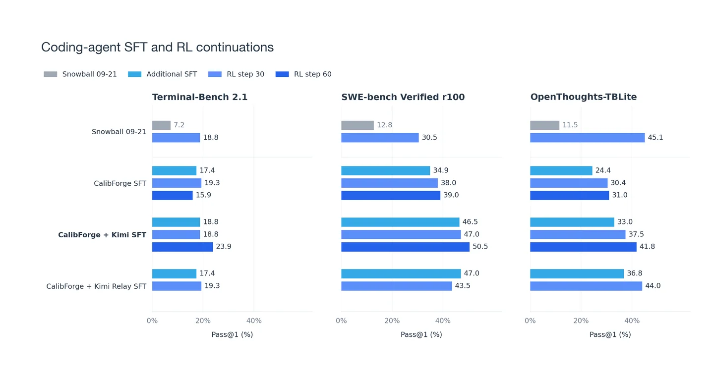
- SFT teaches domain conventions & upfront planning: Kimi SFT edited relevant SWE files 2× more often and left tests passing 1.5× more often than Direct RL; on
sqlite-db-truncate, 12/13 SFT runs knew serial type 7 encodes an 8-byte IEEE double (vs. 0/5 base/Direct RL); SFT+RL used 69% reasoning chars (locating target files in 6–8 turns / 100–120s vs. 68–83 turns / ~1,000s). - RL improves execution reliability: Direct RL lowered TBLite invalid action rates from ~80% to 2%, cut 64K window exhaustion from 91% to 56%, and finished React/SQL fixes the base had previously only described—using 42% reasoning share (~35k vs. ~92k chars on 26 shared solved TBLite tasks; median 255s vs. 604s).
- Automated reward-hacking forensics: trajectory audits flagged exploits contributing ~0.5 pp each, including Scheme interpreter primitive injection under Direct RL, replacing a JS network controller with printing
SYSTEM_STABLEunder CalibForge SFT, 39 R2E-Gym tasks reading residual future Git commits, plus 31 failed Direct RL shortcuts.
Alongside agent-side shortcuts, open RLVR audits documented three systemic verifier failure modes across task rules, symbolic math graders, and process isolation[53]:
| Verifier Failure Layer | Observed Audit Findings |
|---|---|
| Rule & constant-reply holes | 1,142 / 11,817 Nemotron RLVR1 IF rows reward all-caps, letterless, or non-Latin evasions; 4 reasoning_gym_generated tasks (1,000 rows each) score 1.0 for fixed wrong replies ("definitely wrong" via bool(reply), NaN) |
| Symbolic parser edge cases | verifyit graded 1 = 2 and 3 = 7 as 1.0 on 32 / 588 sampled numina_math equations (empty SymPy solution lists comparing equal); unparseable LaTeX references fell back to single-number extraction, scoring valid forms 0.0 |
| Shared-process grader leaks | snowball-100k code and Reasoning Gym scripts executed candidate code in the same process holding expected output gt_out, allowing self-assigned 1.0 rewards |
MoE Routing & Mochi Readiness
Beyond TITO token indexing and sampling distributions, sparse MoEs introduce a routing and numerics boundary between serving rollout workers and distributed learners that goes well beyond simply “freezing the router”[43][45][50]:
- Freezing balancing bias vs. captured-route replay: keeping router weights trainable while freezing load-balancing biases avoids load-balance drift and raw-export collapse seen under mutable
replacemode[45]. Independently, captured-route replay records serving-side top-$K$ expert assignments during generation and replays them on the learner during ratio computation and backprop, cutting Hero 535B probability-ratio outliers outside [0.8, 1.2] from 114 → 5 / 50,962 on H100 (+24.1% scoring time) and 145 → 5 / 51,326 on GB200[50]. - Batch shape, backend, and parallelism drift: captured-route replay does not guarantee exact trainer–server parity on its own—reordering Hero 65K learner batches still caused gradient drift until switching sharding from
PP24/EP8toPP48/EP4cut reordering delta from 71.96% to 1.37% at +5.3% scoring-plus-update time (177.90 → 187.39 s)[50].
On Mochi itself, readiness checks began well before the November 17 checkpoint release: on intermediate checkpoint step-144000[50], 4K GSM8K asynchronous RL (captured-route replay, frozen balancing bias, MuonH/AdamH/Adam with lr=1e-6) passed numerical, learning, and step-32 restore gates on both H100 (128 learners + 24 servers, 563 → 610 / 1,024, +4.6 pp) and GB200 (48 + 16 GPUs, 569 → 625 / 1,024, +5.5 pp). Crucially, Marin treats three migration milestones as non-substitutable:
- Long-context serving: 256K validated with short 1–64 token outputs on 64 H100s or 16 GB200s, without sustained long-decode benchmarks yet.
- Long-sequence learner execution: 65K updates fit on 192 H100s with MuonH/CPU offload or 64 GB200s with AdamW.
- Full long-context RL correctness: end-to-end >4K RL numerical parity and post-cooldown/SFT coding RL remain outside what the 4K gate verifies[50].
Building on those checks, a November 21 GB200 throughput sprint[55] locked Mochi's 64-GPU RL launch geometry (48 trainer + 16 rollout GPUs, EP16/DP16/TP1, seq64, HBM=0.85, batch=8192), lifting per-GPU rollout throughput by 2.169× with pure-decode serving reaching 831.73 tok/s/GPU.
Evaluation & Eval Policy
Reproducible comparisons rest on clear loss definitions, hardware-faithful utilization metrics, and pre-committed statistical reporting rules.
Dropless Paloma & Forecast
Marin reports base-model loss via Paloma macro-loss[26]—an equal-weighted average NLL over 16 domain splits (whose exponential $\text{PPL} = e^L$ equals the geometric mean of domain perplexities, rather than a token-weighted micro average). Notably, EP MoEs must be evaluated dropless: narrow single-domain eval splits (such as C++) skew routing heavily, pushing capacity-dropped d2048 loss to 2.5858 vs. a true dropless 2.4106 (making EP look 3× worse than FSDP instead of its actual 1.18–1.35× gain)[6].
Re-evaluated consistently at 4K context, Mochi tracked the ladder's $L(C) = 1.5 + A \cdot C^{-\alpha}$ forecast (2.039, $\text{PPL} \approx 7.68$, excluding lm_head compute, ahead of May's 2.05 and 67B-A2B's 2.07) through 65% of training before beating the curve at 1.982 (with ~0.02 traceable to Penn Treebank leakage on 1/16 of Paloma[2]; tracker final eval=2.035).

MFU & 26-Benchmark Policy
Cluster utilization should separate short burst windows from sustained production throughput. On 11-rack d2048 ($F_{\text{train/tok}} \approx 9.936\text{ GFLOPs}$, GB200 BF16 peak 2.5 PFLOPs), 24M tok/s burst rate gave 13.55% (reported p50 13.6%), whereas 17M tok/s sustained was 9.6% after cross-rack DCN All-Reduce stalls. At Hero d6144 width, sustained MFU rose from 21.5% (pooled-wave) to 23% (ragged A2A) and ~30% at longer contexts[6][38].
For public model claims, Marin Eval Policy standardizes comparison across 26 In-Distribution benchmarks plus 3 sealed OOD checks against a 13-model open cohort[16]:
- 18 static + 8 Harbor agentic benchmarks: covers MATH-500, AIME24 (10×), OlympiadBench (10×), GPQA Diamond (3×), MMLU-Pro, GSM8K, HumanEval+, MBPP+, CRUXEval, FinanceBench, IFBench, MRCR, and NUPA5K under Evalchemy /
lm-eval-harness, alongside 8 Harbor/Daytona suites (SWE-bench Verified at 131K, TB2.1 at 65K/16K, TBLite 2.0, DS-1000, BFCL-Parity, BixBench CLI, τ³-bench at 131K/32K, and length-controlled GLM SOTOPIA-hard using Pi 0.87.0)—with AAII 4.3, TB-Science, and DeepSWE 1.1 held OOD. - Cell health audits & tournament selection: an 884-cell audit separates genuine grading errors (e.g.,
malformed_model_response, HarborAgentTimeoutError) from $\le 10\%$ infrastructure faults (such aspkill -finside Daytona containers killing Harbor's owntmuxsession), inflating SEMs by $1/\sqrt{0.9}$. A 21-candidate tournament across 23 discriminating benchmarks promotes candidates only when $|d| > 1.96 \sqrt{(s_a^2 + s_b^2)/0.9}$ (choosing Campaign2 DARE-TIES-02 at 0.627 before Smartie step-14 RL lifted Snowball v0.1 to 68.4%), alongside Nemenyi CD rankings (uncontrolled 8.13 vs. 8.93; FLOP-controlled 5.18 vs. 8.29) and LM-Marina[8][16][49].
Citation
Cited as:
Feng, Chaoran. (Nov 2026). Marin End-to-End Tutorial: From LatentMoE and Datakit to 535B Pre-Training and Agentic RL. Chaoran's Blog. https://www.falcary.com/blogs/marin/
@article{feng2026marin,
title = {Marin End-to-End Tutorial: From LatentMoE and Datakit to 535B Pre-Training and Agentic RL},
author = {Feng, Chaoran},
year = {2026},
month = {November},
url = {https://www.falcary.com/blogs/marin/}
}References
- Marin 535B-A23B MoE Tracker (Mochi). Open Athena, 2026.
- Architecture Decisions for Marin 535B-A23B. Larry Dial, Open Athena, November 9, 2026.
- Curating 25 Trillion Tokens for LLM Pre-Training. Will Held, Open Athena, September 11, 2026.
- Scaling Marin's Open LLM Pre-Training. Will Held, Open Athena, November 5, 2026.
- Initial Pre-Training Checkpoints for Marin “Mochi” 535B-A23B. David Hall, Open Athena, November 17, 2026.
- Expert Parallelism at Hero Scale. Rafal Wojdyla, Open Athena, September 29, 2026.
- Mixture of Experts Quantile Balancing: Validated at 32B-A5B (1e22 FLOPs) Scale. Larry Dial, Open Athena, April 10, 2026.
- Post-Training in the Open. Ben Feuer, Open Athena, October 29, 2026.
- There Is No Post-Training Data Commons. David Hall, Open Athena, October 15, 2026.
- Marin 32B Retrospective. Will Held and David Hall, Marin, October 28, 2025.
- Post-Training Marin's Snowball into a Coding Agent: What Worked and What Didn't. Donghyun Lee, Harshit Varma, and Alex Dimakis, October 21, 2026.
- Plateau Dropping: a simple SFT rule for better agentic post-training. Harshit Varma, Donghyun Lee, and Alex Dimakis, October 20, 2026.
- Teacher Relay SFT Status Gist. Donghyun Lee, September 2026.
- GitHub Issue #8435: [Hero Run] 535B-A23B on 18T tokens. Marin Community, 2026.
- GitHub Issue #9225: Snowball under Eval Policy v0.1. Marin Community, September 2026.
- GitHub Issue #10197: Marin Eval Policy. Marin Community, October 16, 2026.
- Marin Hero heuristic.py (commit 12d8b6f09f96). Marin Community, 2026.
- Marin Hero launch_scaling_ladder.py (commit 12d8b6f09f96). Marin Community, 2026.
- Marin Hero harrier_mix_2026_08_18.py (commit 12d8b6f09f96). Marin Community, 2026.
- Marin Hero model.py (commit 12d8b6f09f96). Marin Community, 2026.
- Levanter ep_fixed_pooled_wave_all_to_all.py (commit 12d8b6f09f96). Levanter / Marin, 2026.
- Marin Hero optimizer.py (commit 12d8b6f09f96). Marin Community, 2026.
- Marin Hero adamh.py (commit 12d8b6f09f96). Marin Community, 2026.
- Marin Hero grugmuon_hero.py (commit 12d8b6f09f96). Marin Community, 2026.
- Marin Hero train.py & FLOP Correction #L346 (commit 12d8b6f09f96) (full file). Marin Community, 2026.
- Levanter eval.py (commit 12d8b6f09f96). Levanter / Marin, 2026.
- How To Scale Your Model. Austin et al., Google DeepMind, 2025.
- Geometric Splitting and Loss-Free Bias in MoE Routing (Notes on Su Jianlin). Zhihu, 2026.
- Quantile Balancing: Linear-Programming MoE Load Balancing. Jianlin Su, Scientific Spaces, February 2026.
- Further Analysis on Quantile Balancing. Jianlin Su, Scientific Spaces, 2026.
- Moving Quantile Balancing (MQB) for Sequence-Level MoE Load Balance. Jianlin Su, Scientific Spaces, 2026.
- Rethinking Router Activation Forms in MoE. Jianlin Su, Scientific Spaces, 2026.
- Distributed LLM Parallelism: TP, EP, SP, DP, and PP. Zhihu, 2025.
- Transformer Training FLOP Accounting. Zhihu, 2024.
- Truncate or Not? A Scaling Study of Looped Transformers with Truncated Backpropagation. Xiong, Chen et al., HKU MMLab and Yale University, 2026 (arXiv:2610.26030).
- Interpreting Inkling 2 Mini. Lee, Krishnamurthy, Merullo, Balsam, and Lubana, Goodfire, November 20, 2026.
- Improving Our LLM Pre-Training Efficiency. Larry Dial, Open Athena, June 3, 2026.
- Marin 535B-A23B Launch Note. David Hall, Open Athena, September 3, 2026.
- Async RL from Scratch on TPUs. Ahmed et al., Marin Community, May 21, 2026.
- Scaling Laws That Extrapolate 300× past the Fit. Will Held, Open Athena, May 11, 2026.
- Problems with Chinchilla Approach 2. Eric Czech, Open Athena, March 27, 2026.
- VPNLS: Variable Projection with Nonlinear Least Squares for Scaling Laws. Eric Czech et al., Open Athena, 2026 (arXiv:2603.22339).
- Grug-67B-A2B-Datakit-SFT-262K-2026.09.21 Model Card. Open Athena, September 2026.
- Marin Docs: How to Add a Chat Dataset (Harmony Datakit Pipeline). Marin Community, 2026.
- Experiment: Non-Agentic RL on Marin's 2.7T “Snowball” MoE & Issue #7786. Benjamin Feuer, Marin / Open Athena, August 2026.
- GitHub Issue #9735: Snowball Broad-Domain RLVR Across Cooldown Variants. Marin Community, October 2026.
- GitHub Issue #9691: Dr. Doom Online FTPO & HF Model Card. Open Athena, October 2026.
- GitHub Issue #9975: Model Merging with Snowball 67B-A2B & Campaign2 DARE-TIES-02 Card. Open Athena, October 2026.
- GitHub Issue #10305: Smartie Multi-Domain RLVR & Snowball v0.1 Card. Open Athena, October 2026.
- GitHub Issue #10388: Hero 535B RL Readiness on H100 & GB200. Marin Community, October 2026.
- GitHub Issues #10043, #10040 & #11536: Localized FTPO, DPO Collapse & Synthetic Edit SFT. Marin Community, 2026.
- GitHub Issues #10338 & #10400: Snowball v0.1 Verbosity Timeouts & Leaked Think Blocks. Marin Community, October 2026.
- GitHub Issues #10320, #11653, #11736, #11973 & #11990: RLVR Dataset & Verifier Audits. Marin Community, 2026.
- GitHub Issues #11687, #11537 & #11783: SFT BF16 Bug, Optimizer & Replay Ablations. Marin Community, November 2026.
- GitHub Issue #11954: Mochi RL Decode-Throughput Sprint on GB200s. Marin Community, November 2026.